50 Reproducción
1077
CONCEPTOS CLAVE
50.1 La mayoría de los animales se reproduce sexualmente por la fusión de espermatozoide y huevo, pero algunos animales se reproducen asexualmente y otros en cualquiera de las dos maneras, dependiendo de las condiciones. 50.2 En los machos vertebrados, los testículos producen esperma y hormonas reproductivas. En los humanos y otros mamíferos, la reproducción es regulada por el hipotálamo, la glándula pituitaria y las gónadas. 50.3 En las hembras vertebradas, los ovarios producen óvulos y hormonas reproductivas. En las mujeres, las hormonas mantienen un ciclo menstrual mensual que prepara el cuerpo para un posible embarazo; la ovulación suele ocurrir a la mitad del ciclo. 50.4 Cuando un oocito secundario es fertilizado, empieza el desarrollo y el embrión se implanta en la pared del útero; las hormonas del embrión en desarrollo, del cuerpo lúteo y después de la placenta mantienen el embarazo. 50.5 En los humanos, la respuesta sexual incluye cuatro etapas fi siológicas: fase de excitación, fase de meseta, fase orgásmica y fase de resolución. 50.6 Existe una amplia gama de anticonceptivos altamente confi ables; la mayoría de los anticonceptivos hormonales previenen la ovulación. 50.7 Las enfermedades de transmisión sexual son sobre todo enfermedades contagiosas; entre los tipos de enfermedades de transmisión sexual más frecuentes se encuentran el virus del papiloma humano (VPH), el herpes genital y la enfermedad pélvica infl amatoria, provocada por la clamidia.
L
a supervivencia de cada especie requiere que sus miembros produzcan nuevos individuos para reemplazar a los que mueren. La capacidad para reproducirse y perpetuar su especie es una característica fundamental de los entes vivos. Parafraseando al sociobiólogo estadunidense E. O. Wilson, la reproducción es la manera que tiene un animal de hacer más copias de sus genes. La forma en que esto se logra depende de los benefi cios (y costos) relativos de las estrategias reproductivas disponibles en cualquier situación dada. Los nudibranquios que se aparean (babosas marinas) en la fotografía son hermafroditas . Cada animal tiene órganos masculinos y femeninos y produce esperma y huevos. Sin embargo, no se autofertilizan. Dos nudibranquios se juntan para aparearse e intercambiar esperma a través de un tubo cerca de la cabeza. Luego, cado uno sigue su camino y deja masas que contienen millones de huevos. En este capítulo se resumen algunas características fundamentales de la reproducción animal y se analizan las ventajas evolutivas de la reproducción sexual. Luego el enfoque se centra en el proceso de reproducción humana y en las hormonas que la regulan. El capítulo concluye con el análisis de la anticoncepción y las enfermedades de transmisión sexual.
Apareamiento de nudibranquios ( Chromodoris sp. ) . Fotografi ados en Indonesia.
© Daexto/Dreamstime
booksmedicos.org
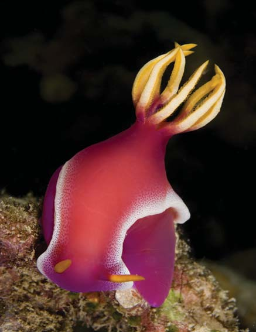
1078 Capítulo 50
50.1 REPRODUCCIÓN ASEXUAL Y SEXUAL
OBJETIVO DE APRENDIZAJE
1 Comparar los benefi cios de la reproducción asexual y sexual, y describir cada modo de reproducción, proporcionando ejemplos específi cos.
La mayoría de los animales llevan a cabo reproducción sexual y algunos, reproducción asexual . Algunos animales se reproducen asexualmente en ciertas condiciones y sexualmente en otras. Como se verá, han evolucionado muchas variaciones de reproducción tanto asexual como sexual.
La reproducción asexual es una estrategia efi ciente
En la reproducción asexual , un solo progenitor origina la descendencia que es genéticamente idéntica a él (a menos que haya mutaciones). Muchos invertebrados, incluidos esponjas, cnidarios y algunos rotíferos, platelmintos y anélidos, pueden reproducirse asexualmente. Algunos vertebrados también se reproducen asexualmente en ciertas condiciones. La reproducción asexual es una adaptación de algunos animales sésiles que no pueden moverse para buscar parejas. Para los animales que se mueven, la reproducción asexual puede ser una ventaja cuando la densidad de la población es baja y no se dispone de parejas con facilidad. En la reproducción asexual, un solo progenitor puede dividirse, gemarse o fragmentarse para dar origen a dos o más descendientes. Las esponjas y los cnidarios se cuentan entre los animales capaces de reproducirse por gemación . Una pequeña parte del cuerpo del progenitor se separa del resto y se desarrolla en un nuevo individuo ( FIGURA 50-1 ). Algunas veces las yemas permanecen fi jas y se vuelven miembros más o menos independientes de una colonia. Los cultivadores de ostras aprendieron hace mucho que cuando intentaban matar estrellas de mar al cortarlas a la mitad y arrojar los trozos al mar, ¡el número de ellas que depredaban a las ostras se duplicaba! En algunos platelmintos, nemertinos y anélidos, esta capacidad para regenerarse forma parte de un método de reproducción conocido como fragmentación . El cuerpo del progenitor se rompe en varios trozos; cada parte regenera las partes faltantes y se desarrolla en un animal completo. La partenogénesis (“desarrollo virgen”) es una forma de reproducción asexual en la que un huevo no fertilizado se desarrolla en un animal adulto. El adulto suele ser un haploide. La partenogénesis es común entre insectos (especialmente abejas y avispas) y crustáceos; también ocurre entre algunos otros grupos de vertebrados e invertebrados, incluidas algunas especies de nematodos, gastrópodos, peces, anfi bios y reptiles. Aunque pocas especies parecen reproducirse sólo por partenogénesis, en la mayoría de las especies hay una alternancia de episodios de partenogénesis con períodos de reproducción sexual. La partenogénesis puede ocurrir durante varias generaciones, seguida en algún punto por reproducción sexual en la que los machos se desarrollan, producen esperma y se aparean con las hembras para fertilizar sus huevos. En algunas especies, la partenogénesis es un medio de producción rápida de individuos cuando las condiciones son favorables.
La mayoría de los animales se reproducen sexualmente
La reproducción sexual en los animales implica la producción y fusión de dos tipos de gametos : espermatozoides y huevos. Por lo general, se requieren dos individuos diferentes. El progenitor macho contribuye con
espermatozoides y un progenitor hembra contribuye con un huevo, u óvulo . El espermatozoide proporciona genes que codifi can algunos de los rasgos del progenitor macho y el óvulo codifi ca genes de algunos de los rasgos del progenitor hembra. El huevo suele ser grande e inmóvil, con reservas de nutrientes que apoyan el desarrollo del embrión. El espermatozoide suele ser pequeño y móvil, adaptado para impulsarse al agitar su largo fl agelo en forma de látigo. Cuando el espermatozoide y el huevo se unen, se produce un cigoto o huevo fertilizado. El cigoto se desarrolla en un nuevo animal, semejante a ambos padres aunque no idéntico a ellos. La reproducción sexual suele implicar procesos estructurales, funcionales y de comportamiento extremadamente complicados. En los vertebrados, las hormonas secretadas por el hipotálamo, la glándula pituitaria y las gónadas regulan estos procesos. Muchos animales acuáticos practican la fertilización externa , en la cual los gametos se encuentran fuera del cuerpo ( FIGURA 50-2a ). Los compañeros de apareamiento suelen liberar huevos y espermatozoides hacia el agua de manera simultánea. Los gametos sólo viven un corto período y muchos se pierden en el agua, otros son devorados por depredadores. Sin embargo, se liberan tantos gametos que cantidades sufi cientes de espermatozoides y células huevo se encuentran para perpetuar la especie. En la fertilización interna los hechos son menos aleatorios. El macho suele entregar esperma directamente en el cuerpo de la hembra. Los tejidos húmedos de ella proporcionan el medio acuoso requerido para el movimiento del esperma y los gametos se funden dentro del cuerpo. La mayoría de los animales terrestres, tiburones y reptiles acuáticos, aves y mamíferos practican la fertilización interna ( FIGURA 50-2b ). El hermafroditismo es una forma de reproducción sexual en la cual un solo individuo produce tanto óvulos como esperma. Algunos herma-
Huevo
Yema
Cabisco/Visuals Unlimited, Inc.
FIGURA 50-1 Reproducción asexual por gemación Una parte del cuerpo de la Hydra crece hacia fuera, luego se separa y se desarrolla en un nuevo individuo. La región del cuerpo del progenitor que se gema no está especializada exclusivamente en la reproducción. (La hidra aquí mostrada también está reproduciéndose sexualmente, como lo evidencia el huevo ( izquierda ).
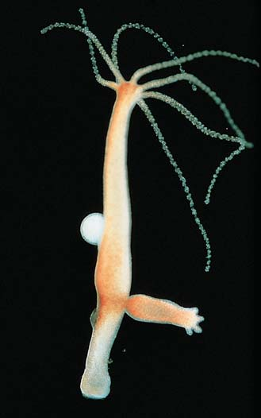
Reproducción 1079
que puedan ser más capaces de sobrevivir que cualquiera de los progenitores. También, debido a que los descendientes son diploides, cuentan con una copia de respaldo de sus genes en caso de que una copia resulte dañada por mutación. Aunque los biólogos coinciden en que la reproducción sexual tiene algunas ventajas selectivas, no están de acuerdo en los detalles. Están explorando varias hipótesis. Una de ellas sostiene que la reproducción sexual permite que mutaciones benéfi cas de cada progenitor se reúnan en la descendencia que puede reproducir y distribuir dichas mutaciones a través de la población. Por ejemplo, ciertas mutaciones benéfi cas pueden permitir que los animales se protejan a sí mismos de los depredadores o que resistan a los parásitos. La reproducción sexual constituye un mecanismo para que estas mutaciones se distribuyan a través de la población. Otra hipótesis sostiene que la reproducción sexual es más efi caz que la asexual al eliminar mutaciones dañinas de la población. Como ya ha aprendido en capítulos anteriores, las mutaciones ocurren de manera constante y la mayoría de ellas son dañinas. Cuando los animales se reproducen asexualmente, toda la descendencia hereda el total de las mutaciones dañinas. A medida que las mutaciones se acumulan en la población, los individuos cuentan cada vez con más genes dañinos. Por el contrario, cuando los animales con mutaciones diferentes se aparean, la descendencia hereda números y combinaciones variables de mutaciones. La descendencia que hereda demasiadas mutaciones dañinas no es viable. Puede no vivir para reproducirse, de modo que sus mutaciones dañinas son eliminadas de la población. Wayne Getz, un especialista en matemáticas aplicadas en la Universidad de California en Berkeley, desarrolló un modelo matemático que pronostica si en una población habrá reproducción sexual o asexual. Se-
froditas, como la tenia, son capaces de autofertilizarse. Más comúnmente, dos animales se aparean y fertilizan mutuamente los huevos del otro (vea la fotografía del apareamiento de los nudibranquios al principio del capítulo). La lombriz de tierra común también es hermafrodita. Dos animales copulan y ocurre fertilización cruzada. Cada lombriz de tierra insemina a la otra. En algunas especies hermafroditas, la autofertilización es evitada por el desarrollo de testículos y ovarios en momentos diferentes.
La reproducción sexual incrementa la variabilidad genética
La reproducción asexual es la forma más rápida y efi ciente de reproducción porque cada célula puede producir dos nuevas células. La reproducción sexual es menos efi ciente porque se requieren dos células, en lugar de sólo una, para formar un nuevo organismo. (Se requieren dos padres.) La reproducción sexual también es más costosa en términos de energía que la reproducción asexual porque el animal debe producir gametos y encontrar parejas. ¿Por qué, entonces, la mayoría de los animales se reproduce sexualmente? Un benefi cio importante de la reproducción sexual es que incrementa la aptitud (éxito reproductivo) de los hijos. En contraste con la reproducción asexual, en la que el animal pasa todos sus genes a su descendencia, la reproducción sexual tiene la ventaja biológica de promover la variedad genética entre los miembros de una especie. Cada descendiente es el producto de una combinación particular de genes aportados por ambos progenitores, en lugar de una copia genética de un solo individuo. Mediante la combinación de rasgos heredados de dos progenitores, la reproducción sexual origina por lo menos algunos descendientes
- Fertilización externa. Así como muchos animales acuáticos, estas ranas bermejas ( Rana temporaria ) liberan sus gametos en el agua. La hembra pone una masa de huevos, mientras el macho la monta y simultáneamente deposita su esperma en el agua.
Carmela Lesczynski/Animals Animals
- Fertilización interna. En la mayoría de los mamíferos terrestres, como estos leones ( Panthera leo ), el macho deposita su esperma dentro del cuerpo de la hembra. La fertilización interna también es practicada por algunos peces, reptiles y mamíferos acuáticos.
Fritz Polking/Dembinsky Photo Associates
FIGURA 50-2 Reproducción sexual por fertilización externa e interna
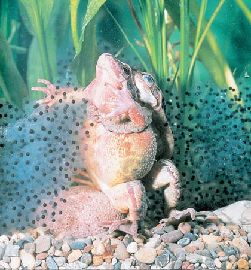
1080 Capítulo 50
Los testículos producen gametos y hormonas
En los humanos y otros vertebrados, la espermatogénesis , el proceso de producción de células espermáticas, ocurre en el par de gónadas masculinas o testículos ( FIGURA 50-3a ). La espermatogénesis se lleva a cabo dentro de una enorme maraña de conductos huecos, los túbulos seminíferos , dentro de cada testículo ( FIGURA 50-3b ). La espermatogénesis empieza con células indiferenciadas, las espermatogonias en la pared de los túbulos ( FIGURA 50-4 ). Las espermatogonias, que son células diploides, se dividen por mitosis y producen más espermatogonias. Algunas crecen y se convierten en espermatocitos primarios , que experimentan meiosis y producen gametos haploides. (Tal vez considere conveniente revisar el análisis de la meiosis en el capítulo 10). En muchos animales, la producción de gametos ocurre sólo en primavera u otoño, aunque los humanos no tienen una temporada de reproducción especial. En el macho adulto humano, la espermatogénesis se realiza de manera continua y cada día se producen millones de espermatozoides. Cada espermatocito primario pasa por una primera división meiótica, que produce dos espermatocitos secundarios haploides ( FIGURA
50-5 ). Durante la segunda división meiótica, cada uno de los dos espermatocitos secundarios origina dos espermátidas haploides. A partir del espermatocito primario original se producen cuatro espermátidas. Cada espermátida se diferencia en un espermatozoide maduro. A continuación se muestra la secuencia:
espermatogonio (diploide) ¡ espermatocito primario (diploide)
¡ dos espermatocitos secundarios (haploides) ¡ cuatro espermátidas
(haploides) ¡ cuatro espermatozoides maduros (haploides)
gún este modelo, los clones de animales gestados por reproducción asexual serían favorecidos en un entorno inmutable. El modelo pronostica además que la reproducción sexual será adaptativa en un entorno inestable y cambiante, y que ambos tipos de reproducción pueden coexistir en condiciones de cambio moderado. Las hipótesis en competencia son una parte esperada del proceso científi co porque el descubrimiento científi co rara vez es una secuencia directa y lineal de pregunta-respuesta, pregunta-respuesta. De hecho, en la medida que el conocimiento científi co se expande, muchas hipótesis creativas son descartadas como callejones sin salida. Algunas veces los investigadores demuestran que cada una de estas hipótesis en competencia puede explicar parte del problema en estudio.
Repaso
■ ¿Cómo puede distinguirse entre gemación, fragmentación y partenogénesis?
■ ¿Cuáles son las ventajas y las desventajas de la reproducción asexual en comparación con la reproducción sexual?
50.2 REPRODUCCIÓN HUMANA: EL HOMBRE
OBJETIVOS DE APRENDIZAJE
2 Relacionar la estructura de cada órgano del sistema reproductor masculino con su función. 3 Seguir el paso de las células espermáticas por el sistema reproductor mascu lino desde su origen en los túbulos seminíferos hasta su expulsión del cuerpo en el semen. (Incluir una descripción de la espermatogénesis). 4 Describir la regulación endocrina de la reproducción en el varón.
El varón, como otros machos mamíferos, tiene el papel reproductivo de producir células espermáticas y entregarlas en el tracto reproductor femenino. Cuando un espermatozoide se combina con un óvulo, contribuye con sus genes y determina el sexo del descendiente.
Cordón espermático
Venas testiculares
Arteria testicular
Conductos deferentes Cabeza del epidídimo
Túbulos seminíferos
Cápsula del testículo
Cola del epidídimo
- Los testículos, el epidídimo y el cordón espermático se muestran en disección parcial y expuestos. Los testículos se muestran en sección sagital para ilustrar la disposición de los túbulos seminíferos.
FIGURA 50-3 Animada Sistema reproductor masculino
Vesícula seminal Conducto eyaculador
Próstata
Recto
Glándula bulbouretral
Epidídimo
Escroto
Vejiga
Hueso púbico
Conductos deferentes
Cuerpo cavernoso
Cuerpo esponjoso
Uretra
Glande del pene
Testículos
- El escroto, el pene y la región pélvica del macho humano se muestran en sección sagital para ilustrar su estructura interna.
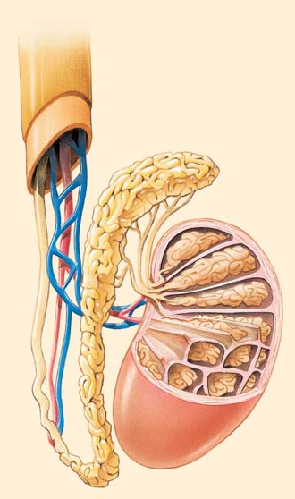
Reproducción 1081
los testículos no descienden. Si esta condición no es corregida con cirugía o tratamiento hormonal, los túbulos seminíferos terminan por degenerarse y el hombre se vuelve estéril, incapaz de producir descendientes. El escroto es una cubierta externa de la cavidad pélvica y se encuentra conectada a ésta por los canales inguinales . A medida que los testículos descienden, jalan sus vasos sanguíneos, nervios y tubos conductores detrás de ellos. La región inguinal es un sitio débil en la pared abdominal. Esforzar los músculos abdominales al levantar objetos pesados algunas veces desgarra el tejido inguinal. Luego, un lazo de intestino puede sobresalir en el escroto a través del desgarre, condición conocida como hernia inguinal .
Una serie de conductos almacena y transporta el esperma
Las células espermáticas salen de los túbulos seminíferos de cada testículo y pasan hacia un tubo más largo enrollado, el epidídimo . Ahí, el esperma termina de madurar y es almacenado. Durante la eyaculación, el esperma pasa de cada epidídimo hacia un conducto espermático, el conducto deferente . Éste se extiende desde el escroto a través de la región inguinal y hacia la cavidad pélvica. Cada conducto deferente se vacía en un corto conducto eyaculatorio que pasa por la próstata y luego se abre hacia la uretra . Ésta, que en instantes diferentes conduce orina y semen, pasa a través del pene hacia el exterior del cuerpo. Así, el esperma pasa por las siguientes estructuras:
túbulos seminíferos ¡ epidídimo ¡ conducto deferente ¡
conducto eyaculatorio ¡ uretra ¡ liberación desde el cuerpo
Cada espermatozoide maduro consta de una cabeza, una parte intermedia y un fl agelo ( FIGURA 50-6 ). La cabeza consta casi completamente del núcleo. Parte del núcleo está cubierta por el acrosoma , una gran vesícula que se diferencia del complejo de Golgi. El acrosoma contiene enzimas que ayudan al espermatozoide a penetrar en el óvulo. Las mitocondrias, localizadas en la parte intermedia del espermatozoide, suministran la energía para el movimiento del fl agelo. El fl agelo del espermatozoide tiene la típica disposición eucarionte de microtúbulos de 9 + 2. Durante su desarrollo, la mayoría del citoplasma del espermatozoide es eliminado y fagocitado por las células de Sertoli que rodean el lumen lleno de líquido del túbulo seminífero. Estas células proporcionan nutrientes para el desarrollo de las células espermáticas. Las células de Sertoli también secretan hormonas y otras moléculas de señalización. Cada célula de Sertoli se extiende desde la membrana exterior del túbulo seminífero hasta su lumen. Las células de Sertoli están unidas entre sí por uniones estrechas en un sitio justo dentro de la membrana exterior del túbulo (vea en el capítulo 5 un análisis de las uniones estrechas). Juntas, las células de Sertoli forman una barrera sangre-testículo que impide que sustancias dañinas entren al túbulo e interfi eran con la espermatogénesis. Esta barrera también evita que el esperma salga del túbulo hacia la sangre, donde podría estimular una respuesta inmunológica. Las uniones estrechas entre las células de Sertoli forman compartimientos que separan las células espermáticas en varias etapas de desarrollo. Las células espermáticas humanas no pueden desarrollarse a la temperatura del cuerpo. Aunque los testículos se generan dentro de la cavidad abdominal del embrión masculino, aproximadamente dos meses antes de nacer descienden hacia el escroto , una bolsa cubierta de piel suspendida de la ingle. El escroto sirve como una unidad de enfriamiento que mantiene el esperma por debajo de la temperatura del cuerpo. En casos raros,
Espermatogonio Células espermáticas maduras
Célula de Sertoli Pared de los túbulos seminíferos
Espermátida Espermatocito primario
Espermatocito secundario
Espermatogonio
Espermatogonio
Células espermáticas maduras
Células de Sertoli Espermatocito primario
100 μ m
- Micrografía mejorada con color de una sección transversal a través de un túbulo seminífero (b) Células espermáticas en varias etapas de desarrollo. Observe que las células espermáticas en desarrollo están entre las grandes y nutritivas células de Sertoli.
Custom Medical Stock Photo
FIGURA 50-4 Animada Espermatogénesis en los túbulos seminíferos

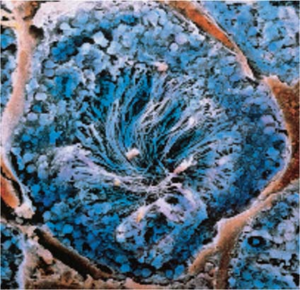
1082 Capítulo 50
Éste consta de alrededor de 200 millones de células espermáticas suspendidas en las secreciones de estas glándulas. El par de vesículas seminales secretan un líquido rico en fructosa y prostaglandinas hacia los conductos deferentes (vea la fi gura 50-3). La fructosa proporciona energía para el esperma una vez que es eyaculado. Las prostaglandinas estimulan las contracciones del músculo liso en los tractos reproductores masculino y femenino. Estas contracciones ayudan a transportar el esperma hacia abajo por el tracto reproductor masculino y hacia arriba por el tracto reproductor femenino hacia el oviducto, donde ocurre la fertilización. Las vesículas seminales también secretan fi brinógeno, que coagula el semen. El fl uido secretado por las vesículas seminales representa alrededor de 60% del volumen del semen. La glándula próstata o próstata secreta un fl uido alcalino que neutraliza las secreciones ácidas de la vagina. Esto es importante porque el esperma es más activo y sobrevive más en un entorno ligeramente alcalino. La secreción de la próstata también contiene enzimas de coagulación y antígeno prostático específi co (APE) . Las enzimas de coagulación actúan sobre el fi brinógeno proveniente de las vesículas
Glándulas accesorias producen la porción líquida del semen
A medida que los espermatozoides se desplazan por los tubos conductores, se mezclan con secreciones de tres tipos de glándulas accesorias. Durante el clímax sexual se eyaculan aproximadamente 3 mL de semen .
Segunda división meiótica
En los testículos, las espermatogonias se dividen muchas veces por mitosis. Algunas crecen y se vuelven espermatocitos primarios que experimentan meiosis.
Espermatocito primario
Espermatocito primario
Espermatocito secundario
Espermátidas
Células espermáticas maduras
Primera división meiótica
FIGURA 50-5 Espermatogénesis Observe en este ejemplo que en el espermatocito primario están presentes cuatro cromosomas (2 n =4) y que la meiosis produce el número (2) haploide ( n =2) en los espermatocitos secundarios, espermátidas y células espermáticas maduras.
Cabeza
Parte intermedia
Flagelo
Acrosoma
Membrana plasmática
Núcleo
Mitocondria (configuración en espiral)
1 μ m
Acrosoma
Núcleo
Un espermatozoide maduro tiene cabeza, parte intermedia y flagelo. El acrosoma contiene enzimas importantes para la penetración del huevo.
Micrografía MET mejorado con color de una célula espermática humana.
Dr. Tony Brain/Science Photo Library/Photo Researchers, Inc.
FIGURA 50-6 Estructura de un espermatozoide maduro
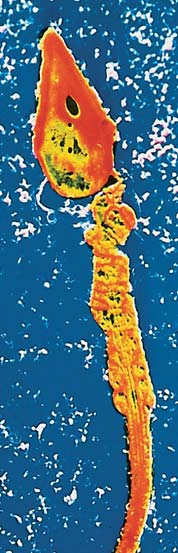
Reproducción 1083
lina reduce de manera importante el riesgo de adquirir VIH durante las relaciones sexuales vaginales. Bajo la piel, el pene consta de tres columnas paralelas de tejido eréctil: dos cuerpos cavernosos y un cuerpo esponjoso ( FIGURA 50-7 ). El cuerpo esponjoso rodea la porción de la uretra que pasa por el pene. El tejido eréctil contiene numerosos vasos sanguíneos. Cuando el hombre está estimulado sexualmente, neuronas parasimpáticas dilatan las arterias en el pene. A medida que la sangre llena los vasos sanguíneos del tejido eréctil, el tejido se hincha. Esto comprime las venas que sacan la sangre del pene, aminorando el fl ujo de salida de la sangre. Así, entra más sangre al pene de la que sale, hinchando aún más el tejido eréctil con sangre. Ocurre la erección del pene ; con la cual éste aumenta su longitud, diámetro y fi rmeza. Aunque el pene humano no contiene hueso, éste se halla presente en el pene de otros mamíferos, como murciélagos, roedores y algunos primates. La disfunción eréctil, la incapacidad crónica de sostener una erección, evita las relaciones sexuales efi caces. Este trastorno común asociado con varias causas físicas y psicológicas, ahora es tratado con sildenafi l (Viagra) y fármacos relacionados (Levitra, Cialis). Estos fármacos bloquean la acción de una enzima que descompone la molécula de señalización que sostiene la erección (vea en el capítulo 6 un análisis más detallado).
La testosterona tiene múltiples efectos
La testosterona es el andrógeno , u hormona masculina, más importante. Es un esteroide producido por las células intersticiales entre los túbulos seminíferos en los testículos. La testosterona tiene muchas fun-
seminales y producen fi brina. Tal vez el lector recuerde del capítulo 44 que los hilos de fi brina forman los coágulos de sangre. En este caso, la fi brina coagula el semen. Cuando éste es eyaculado, su coagulación ayuda a mantener el esperma en el tracto reproductivo femenino mientras el pene es retirado. Luego, el coágulo es descompuesto por el antígeno prostático específi co y el esperma móvil sigue su camino por el tracto reproductivo femenino hacia el óvulo. En Estados Unidos, el cáncer de próstata es el más común en hombres y es también la causa principal de muerte por cáncer en varones. Así como con todos los tipos de cáncer, la detección temprana es importante. Pruebas de detección para el cáncer de próstata incluyen el examen rectal directo (ERD) y la prueba sanguínea de antígeno prostático específi co (APE) que mide la concentración de dicho antígeno en la sangre. Altas concentraciones de APE son asociadas con cáncer o infección de la próstata, y ciertos cambios benignos en ella. Un APE alto indica la necesidad de análisis adicionales, por lo general biopsia de próstata. El cáncer de próstata puede ser tratado con cirugía, terapia hormonal o con radiación. Durante la excitación sexual, el par de glándulas bulbouretrales , ubicadas cada una al lado de la uretra, liberan una secreción mucosa. Este fl uido lubrica el pene, facilitando su penetración en la vagina. Una causa fundamental de infertilidad del hombre es la producción insufi ciente de espermatozoides. Cuando dicha producción es inferior a 35 millones por mililitro de semen, la fertilidad está dañada y hombres cuya cantidad de espermatozoides es inferior a 20 millones por mililitro suelen ser considerados estériles. Cuando los intentos de una pareja por gestar un niño son infructuosos, puede realizarse un análisis de conteo de espermatozoides y de su calidad en un laboratorio clínico. Algunas veces se encuentra que el semen contiene una cantidad anormal de espermatozoides o, en ocasiones, no los hay en absoluto. En Estados Unidos, en la década de 1970, un hombre joven y sano promedio producía alrededor de 100 millones de espermatozoides por mililitro de semen. Hoy, la media ha bajado aproximadamente a 60 millones. Aunque se ignora la causa de este descenso, los bajos conteos de espermatozoides han sido vinculados con una variedad de factores ambientales, incluyendo el uso crónico de mariguana, abuso de alcohol y fumar tabaco. Los estudios también muestran que los fumadores tienen mayor probabilidad que los no fumadores de producir esperma anormal. La exposición a toxinas industriales y del ambiente como DDT (diclorodifeniltricloroetano) y PCB (bifenilos policlorados) puede contribuir a la producción de bajas cantidades de espermatozoides y a la esterilidad. El uso de esteroides anabólicos por atletas para acelerar el desarrollo muscular puede provocar esterilidad tanto en hombres como en mujeres (vea en el capítulo 49 Preguntas acerca de: Esteroides anabólicos y otras hormonas de las que se abusa ).
El pene transfi ere esperma a la mujer
El pene es un órgano copulatorio eréctil que suministra esperma al tracto reproductor femenino. Se trata de un largo eje que se agranda para formar una punta dilatada, el glande . Parte de la piel fl oja del pene se pliega y cubre la porción proximal del glande, formando un capuchón denominado prepucio . El prepucio es retirado durante la circuncisión, procedimiento que suele realizarse en los bebés por razones higiénicas o religiosas. Se ha documentado en estudios que la circuncisión mascu-
Venas dorsales (dilatadas) Arteria dorsal (contraída) Cuerpos cavernosos Cuerpo esponjoso
Cuerpo esponjoso
Uretra
Venas dorsales (contraídas) Arteria (dilatada) Tejido conectivo Cuerpos cavernosos
Sección del pene flácido
Sección del pene erecto
Vejiga
Próstata
Aberturas de los conductos eyaculatorios
Glándula bulbouretral
Aberturas de las glándulas bulbouretrales
Cuerpos cavernosos
Cuerpo esponjoso
Uretra
Prepucio
Abertura uretral
Glande del pene
Sección longitudinal a través de la próstata y el pene. Observe las tres columnas paralelas de tejido eréctil, los dos cuerpos cavernosos y el cuerpo esponjoso en el pene.
Secciones transversales a través de un pene flácido y erecto. Los tejidos eréctiles se congestionan con la sangre en el pene erecto.
FIGURA 50-7 Estructura interna del pene
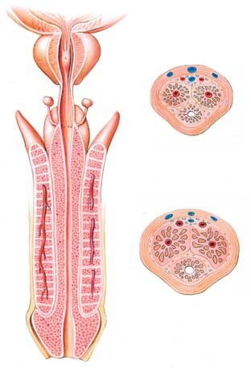
1084 Capítulo 50
se une con la testosterona y la concentra en los túbulos. La testosterona también mantiene las características sexuales secundarias masculinas. Las concentraciones de la hormona reproductiva son reguladas por mecanismos de retroalimentación negativa (vea la fi gura 50-8b). La testosterona actúa sobre el hipotálamo, disminuyendo su secreción de HLGn, lo cual disminuye la secreción de HSF y HL por la pituitaria. La testosterona también inhibe directamente el lóbulo anterior de la pituitaria al bloquear las acciones normales de la HLGn sobre la síntesis y liberación de HL. La secreción de HSF es inhibida principalmente por la inhibina , una hormona peptídica secretada por las células de Sertoli. La HSF misma estimula la secreción de inhibina. La regulación endocrina de la función reproductiva es compleja y es probable que sean identifi cadas otras hormonas y moléculas de señalización. La insufi ciencia de testosterona da por resultado esterilidad. Si un hombre es castrado ; es decir, si le extirpan los testículos, antes de la pubertad, se le priva de la testosterona y se vuelve un eunuco. Mantiene órganos sexuales semejantes a los de un niño y no desarrolla características sexuales secundarias. Si la castración ocurre después de la pubertad, el aumento en la secreción de hormonas masculinas por las glándulas suprarrenales ayuda a mantener la masculinidad.
Repaso
■ ¿Cuáles son las funciones de los testículos?
■ ¿Por cuáles estructuras debe pasar un espermatozoide en su trayecto desde un túbulo seminífero hasta que sale del cuerpo del hombre por eyaculación?
■ ¿Cuál es la base fisiológica para la erección del pene?
■ ¿Cuáles son las acciones de la testosterona? Proporcione una visión general de la regulación endocrina de la reproducción masculina.
50.3 REPRODUCCIÓN HUMANA: LA MUJER
OBJETIVOS DE APRENDIZAJE
5 Relacionar la estructura de cada órgano del sistema reproductor femenino con su función.
ciones, empezando durante el temprano desarrollo embrionario cuando estimula la gestación de los órganos reproductores masculinos primarios ( TABLA 50-1 ). Más adelante en el desarrollo, la testosterona estimula el descenso de los testículos hacia el escroto. La pubertad es el período de maduración sexual durante el cual las características sexuales secundarias comienzan a desarrollarse y el individuo se vuelve capaz de reproducirse. En los hombres, la pubertad suele empezar entre los 10 y 12 años de edad y continúa hasta entre los 16 y 18. La testosterona afecta directamente el músculo y el hueso, y estimula el estirón de la adolescencia en los hombres púberes. Produce las características sexuales primarias masculinas: el crecimiento de los órganos reproductores y la espermatogénesis. La testosterona también estimula el desarrollo de las características sexuales secundarias en la pubertad, incluyendo el crecimiento del vello facial y corporal, y el incremento en la longitud y grosor de las cuerdas vocales, lo cual ocasiona que la voz se vuelva más grave. La testosterona es necesaria para el deseo sexual normal. En algunos de sus tejidos objetivo, la testosterona se convierte en otros esteroides. Algo interesante es que en las células cerebrales la testosterona se transforma en estradiol , la hormona sexual femenina más importante. Las implicaciones de esta conversión aún no se comprenden.
El hipotálamo, la glándula pituitaria y los testículos regulan la reproducción masculina
A medida que lea la siguiente descripción de la acción y regulación hormonal masculina, siga los pasos en la FIGURA 50-8 . Cuando un muchacho tiene aproximadamente 10 años de edad, el hipotálamo empieza a secretar hormona liberadora de gonadotropina (HLGn) . Ésta estimula a la pituitaria anterior para secretar hormona estimulante del folículo (HSF) y hormona luteinizante (HL) , denominadas hormonas gonadotrópicas. Tanto la HSF como la HL son glicoproteínas que usan AMP cíclico como segundo mensajero (vea el capítulo 49). La HSF estimula a las células de Sertoli para que secreten proteína unida a los andrógenos (PUA) y otras moléculas de señalización que son necesarias para la espermatogénesis. La HL estimula a las células intersticiales para secretar testosterona. La HSF, la HL y la testosterona estimulan directa o indirectamente la secreción de testosterona y la espermatogénesis. Para esta última se requiere una alta concentración de testosterona en los testículos. La testosterona y la HSF estimulan a las células de Sertoli para producir PUA, que
Principales hormonas reproductoras masculinas
Glándula y Tejido objetivo hormonas endocrinas principal Acciones principales
Hipotálamo Hormona liberadora de Pituitaria anterior Estimula la liberación de HSF y HL gonadotropina (HLGn)
Pituitaria anterior Hormona estimulante Testículos Estimula el desarrollo de los túbulos seminíferos; estimula la espermatogénesis del folículo (HSF)
Hormona luteinizante (HL) Testículos Estimula a las células intersticiales para secretar testosterona
Testículos Testosterona General Antes del nacimiento: estimula el desarrollo de los órganos sexuales primarios y el descenso de los testículos hacia el escroto
En la pubertad: responsable del estirón de la adolescencia; estimula el desarrollo de las estructuras reproductivas y las características sexuales secundarias
En la etapa adulta: mantiene las características sexuales secundarias; estimula la espermatogénesis
Inhibina Pituitaria anterior Inhibe la secreción de HSF
TABLA 50-1
Reproducción 1085
redes laterales de la cavidad pélvica y se mantienen en su posición por medio de varios ligamentos de tejido conectivo ( FIGURA 50-9 ). En su interior, el ovario consta principalmente de tejido conectivo que contiene óvulos dispersos en varias etapas de maduración. El proceso de producción de óvulos, denominado oogénesis , empieza en los ovarios. Antes del nacimiento, cientos de miles de oogonias están presentes en los ovarios. Todas las oogonias femeninas se forman durante el desarrollo embrionario. Después del nacimiento ya no se forman más. Durante el desarrollo prenatal, las oogonias aumentan de tamaño y se vuelven oocitos primarios . Para el momento del nacimiento, están en la profase de la primera división meiótica. En esta etapa, entran en una fase de reposo que dura toda la infancia y la vida adulta. Un oocito primario y las células granulosas que lo rodean forman un folículo ( FIGURA 50-10 ). Las células granulosas están conectadas por uniones estrechas que forman una barrera protectora alrededor del oocito. Con el inicio de la pubertad, unos cuantos folículos comienzan a madurar cada mes en respuesta a la HSF secretada por la glándula pituitaria anterior. A medida que el folículo crece, las células granulosas
6 Seguir el desarrollo de un óvulo humano en su paso por el sistema reproductor femenino hasta que es fertilizado. 7 Describir la regulación endocrina de la reproducción en la mujer e identifi car los eventos importantes del ciclo menstrual, como la ovulación y la menstruación.
El sistema reproductor femenino produce oocitos (gametos inmaduros), recibe el pene y el esperma liberado por éste durante las relaciones sexuales, aloja y nutre el embrión durante el desarrollo prenatal, da a luz y produce leche para el bebé (lactación). Las hormonas secretadas por el hipotálamo, la glándula pituitaria y los ovarios interactúan para regular y coordinar estos procesos.
Los ovarios producen gametos y hormonas sexuales
Igual que las glándulas masculinas, las gónadas femeninas, u ovarios , producen tanto gametos como hormonas sexuales. Similares en tamaño y forma a grandes almendras, los ovarios se encuentran cerca de las pa-
Las hormonas del hipotálamo, la pituitaria anterior y los testículos regulan la reproducción masculina por sistemas de retroalimentación negativa.
Hipotálamo
Pituitaria anterior
Pituitaria posterior
HLGn
HLGn
Células de Sertoli
PUA
Espermatogénesis
LH HSF
Testículos
Testosterona
Hipotálamo
Pituitaria anterior Pituitaria posterior
HLGn
HLGn
LH HSF
Testosterona
Actúa sobre las estructuras reproductivas y muchas otras células objetivo Actúa sobre las estructuras reproductivas y muchas otras células objetivo
Sólo HSF
Células de Sertoli
PUA
Espermatogénesis
Células intersticiales Células intersticiales
Inhibina
- Visión de conjunto de la acción hormonal. (b) Sistemas de retroalimentación negativa regulan las concentraciones de hormonas.
La testosterona inhibe la secreción de HLGn por el hipotálamo y la secreción de HSF y HL por la pituitaria.
La inhibina impide la secreción de HSF.
El hipotálamo secreta HLGn, que estimula a la pituitaria anterior.
La pituitaria secreta HSF y HL.
La HSF estimula a las células de Sertoli para secretar PUA y otras moléculas de señalización necesarias para la espermatogénesis. La HL estimula a las células intersticiales para secretar testosterona.
La testosterona estimula a las células de Sertoli, llevando a la estimulación de la espermatogénesis.
La testosterona mantiene las características sexuales secundarias.
1
2
3
4
5
6
7
FIGURA 50-8 Regulación de la reproducción masculina Las fl echas verdes indican estimulación; las rojas, inhibición. (HLGn, hormona liberadora de gonadotropina; HSF, hormona estimulante del folículo; HL, hormona luteinizante; PUA, proteína unida a los andrógenos).
PUNTO CLAVE
1086 Capítulo 50
Conforme el oocito madura, se aproxima más a la superfi cie del ovario y termina por verse como una protuberancia llena de líquido sobre la superfi cie del ovario. Las células foliculares secretan enzimas proteolíticas que descomponen una pequeña área de la pared del ovario. Durante la ovulación , el oocito secundario se proyecta a través de la pared del ovario hacia la cavidad pélvica. La porción del folículo que permanece en el ovario se convierte en el cuerpo lúteo , una glándula endocrina temporal que secreta estrógeno y progesterona .
Los oviductos transportan al oocito secundario
Casi inmediatamente después de la ovulación, el oocito secundario es barrido hacia la abertura en forma de embudo del oviducto , también conocido como tubo uterino o trompa de Falopio . Células epiteliales ciliadas que revisten el oviducto barren el oocito hacia el oviducto y lo mueven hacia el útero. La fertilización ocurre dentro del oviducto. En caso de que no ocurra la fertilización, el oocito secundario se degene ra ahí. Las cicatrices de los oviductos (por ejemplo, por enfermedad infl amatoria pélvica , provocada por una enfermedad de transmisión sexual) pueden bloquear las trompas de modo que el óvulo fertilizado no pueda pasar hacia el útero. Las mujeres que tienen bloqueados los oviductos pueden ser infértiles. Algunas veces la contracción parcial del oviducto resulta en embarazo de trompa . El embrión no puede avanzar hacia el útero y empieza a desarrollarse en la pared del oviducto. Debido a que los oviductos no están adaptados para soportar la carga de un embrión en desarrollo, tanto el oviducto como el embrión que contiene deben retirarse quirúrgicamente antes de generar una hernia y poner en peligro la vida de la mujer.
proliferan, formando varias capas. Las células de tejido conectivo que rodean las células granulosas se diferencian para formar una capa de células de la teca . A medida que el folículo madura, el oocito primario completa su primera división meiótica. Las dos células haploides producidas difi eren en tamaño ( FIGURA 50-11 ). La más pequeña, el primer cuerpo polar , puede dividirse más tarde, formando dos cuerpos polares, que terminan por desintegrarse. La célula más grande, el oocito secundario , procede a la segunda división meiótica pero permanece en la fase II hasta su fertilización. Cuando la meiosis continúa, la segunda división meiótica origina un solo óvulo y un segundo cuerpo polar. Los cuerpos polares son pequeños y aparentemente disponen de cromosomas innecesarios con una cantidad mínima de citoplasma. La secuencia es como sigue:
oogonia (diploide) ¡ oocito primario (diploide) ¡ oocito
secundario + primer cuerpo polar (ambos haploides) ¡ (después de
la fertilización) óvulo + segundo cuerpo polar (ambos haploides)
Recuerde que en el hombre, cada espermatocito primario da origen a cuatro células espermáticas funcionales. Por el contrario, cada oocito primario genera un solo óvulo. Cuando un oocito se desarrolla, se separa de sus células foliculares circundantes por una capa de glicoproteínas denominada zona pelúcida . A medida que el folículo se desarrolla, las células foliculares secretan fl uido que se colecta en la cavidad (espacio) entra ellas (vea la fi gura 50-10). Las células foliculares también secretan estrógenos , hormonas sexuales femeninas. El estrógeno principal es el estradiol (vea la fi gura 49-2b). Por lo general, sólo un folículo madura por completo cada mes. Varios otros pueden desarrollarse durante un tiempo y luego se deterioran por apoptosis.
Cuello del útero
Ovario
Útero
Vejiga
Hueso púbico
Uretra
Vulva
Vagina
Recto
Ano
Oviducto (trompa uterina)
- Sección sagital media a través de la pelvis femenina. Observe la posición del útero con respecto a la vagina.
Oviducto Ligamento ovárico Cuerpo del útero
Ovario Endometrio
Pared muscular del útero Cuerpo del útero Vagina
- Vista anterior del sistema reproductor femenino. Algunos órganos se han cortado para mostrar su estructura interna. Ligamentos de tejido conectivo anclan en su sitio a los órganos reproductivos.
FIGURA 50-9 Animada Sistema reproductor femenino
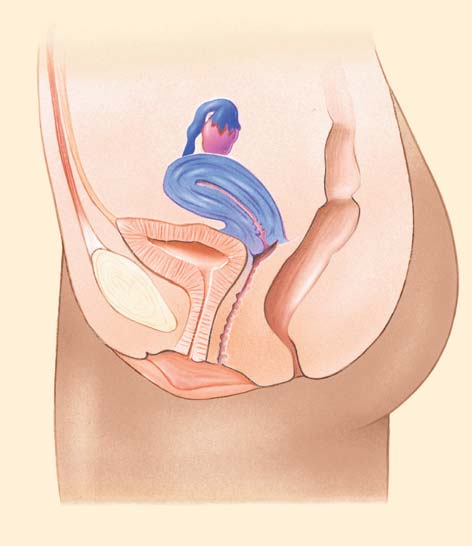
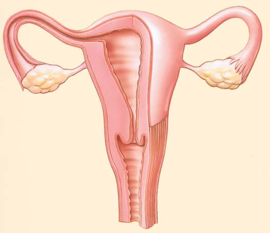
Reproducción 1087
gruesas de músculo liso y un revestimiento epitelial, el endometrio , que aumenta de tamaño cada mes en preparación de un posible embarazo. Hasta 15% de las mujeres (más de cinco millones de mujeres en Estados Unidos) padecen endometriosis , un trastorno doloroso en el que fragmentos del endometrio migran a otras áreas, como los oviductos u ovarios. Lo mismo que la enfermedad pélvica infl amatoria, la endometriosis provoca cicatrices que pueden ocasionar infertilidad. Si un oocito secundario es fertilizado, el minúsculo embrión entra en el útero y se implanta en el endometrio. A medida que crece y se desarrolla, es mantenido por nutrientes y oxígeno suministrados por los vasos sanguíneos maternos circundantes. Si la fertilización no ocurre durante el ciclo mensual, el endometrio se desprende y es descargado en el proceso conocido como menstruación . La parte inferior del útero, denominada cuello del útero , se extiende ligeramente hacia la vagina. El cáncer cervical es el segundo tipo de cáncer más común en el mundo. Casi todos los casos de cáncer cervical están relacionados con el virus del papiloma humano (VPH). La detección del cáncer cervical suele ser posible mediante la prueba de Papanicolaou, en el que unas cuantas células son raspadas del cuello del útero durante un examen ginecológico regular y estudiadas al microscopio. Cuando se detecta cáncer cervical en una etapa temprana, hay bastantes posibilidades de que la paciente pueda sanar.
La vagina recibe esperma
La vagina es un conducto muscular elástico, que se extiende desde el útero hacia el exterior del cuerpo. La abertura vaginal se localiza en la región perineal entre la abertura de la uretra (en posición anterior) y la abertura del ano (en posición posterior). La vagina sirve como receptácu lo del esperma durante las relaciones sexuales y como parte del canal del parto (vea la fi gura 50-9).
El útero incuba el embrión
Los oviductos se abren hacia las esquinas superiores del útero en forma de pera (vea la fi gura 50-9b). Casi del tamaño de un puño, el útero (o matriz) ocupa una posición central en la cavidad pélvica. Tiene paredes
Oocito secundario
Zona pelúcida Células granulosas Células de la teca
500 μ m Cavidad
- Micrografía con microscopio óptico de un folículo en desarrollo. El oocito secundario está rodeado por la zona pelúcida (una capa de glicoproteínas) y por las células granulosas. Las células de tejido conectivo que rodean las células granulosas forman una capa de células de la teca.
Biophoto Associates
Útero Folículos
Oocito secundario
Cavidad
Folículo maduro
Ovulación (el folículo se rompe, liberando el oocito)
Oocito secundario
Zona pelúcida
Oviducto
Cuerpo lúteo
Folículo deteriorado
Ligamento ovárico
- Folículos en el ovario. Éste es un diagrama compuesto; todas estas etapas de desarrollo no se presentan al mismo tiempo.
FIGURA 50-10 Animada Desarrollo del folículo en el ovario
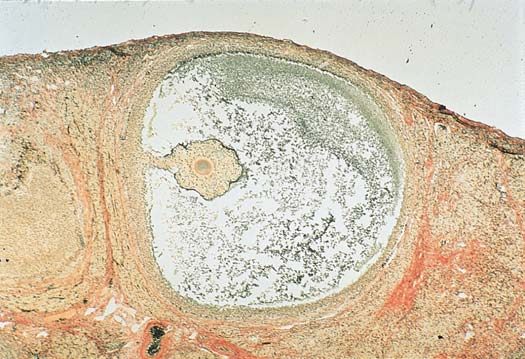
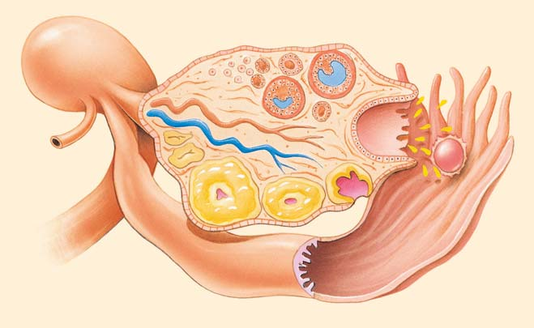
1088 Capítulo 50
La vulva son estructuras genitales externas
Los genitales externos femeninos, conocidos en su conjunto como la vulva , incluyen varias estructuras. Pliegues semejantes a labios, los labios menores , rodean las aberturas vaginal y uretral ( FIGURA 50-12 ). El área encerrada por los labios menores es el vestíbulo de la vagina. Las glándulas vestibulares secretan un moco lubricante dentro del vestíbulo. El himen es un delgado aro de tejido que forma una frontera alrededor de la entrada de la vagina. En posición anterior, los labios menores se unen para formar el prepucio del clítoris , una pequeña estructura eréctil comparable con el glande del pene masculino. Así como el pene, el clítoris contiene tejido eréctil que se hincha y endurece con la sangre durante la excitación sexual. Abundante en terminaciones nerviosas, el clítoris es en extremo sensible al tacto, la presión y la temperatura, y sirve como centro de sensación sexual en la mujer. Externos a los delicados labios menores están los labios mayores más gruesos. El monte de Venus es el montículo de tejido graso justo arriba del clítoris en la unión de los muslos y el torso. En la pubertad, el monte de Venus y los labios mayores se cubren con vello púbico grueso.
Los pechos funcionan en la lactación
Cada pecho consta aproximadamente de 15 a 20 lóbulos de tejido glandular. La cantidad de tejido adiposo alrededor de estos lóbulos determina el tamaño de los pechos y explica su suavidad. Células glandulares están dispuestas en grupos semejantes a racimos de uvas denominados alveolos ( FIGURA 50-13 ). Conductos desde cada grupo se unen para formar un solo conducto desde cada lóbulo, produciendo entre 15 y 20 aberturas diminutas sobre la superfi cie de cada pezón. Los pechos son el sitio más común de cáncer en las mujeres, excepto por la piel (vea Preguntas acerca de: Cáncer de mama ).
Segunda división meiótica
Oocito secundario Cuerpo polar
Primera división meiótica
Oocito primario
Cuerpos polares
Óvulo
FIGURA 50-12 Estructuras genitales femeninas externas En conjunto, las estructuras mostradas (excluyendo el ano) se conocen como la vulva.
Monte de Venus
Abertura de la uretra
Abertura vaginal
Clítoris
Labios mayores
Himen
Labios menores
Ano
FIGURA 50-11 Oogénesis Antes del nacimiento, las oogonias ( no se muestran ) se dividen muchas veces por mitosis. Algunas oogonias se diferencian para convertirse en oocitos primarios que experimentan meiosis. Sólo un óvulo funcional es producido a partir de cada oocito primario. Las otras células producidas son cuerpos polares que se degeneran. El primer cuerpo polar algunas veces se divide como se muestra pero a menudo simplemente se deteriora. La segunda división meiótica es completada después de la fertilización. Observe en este ejemplo que en el oocito primario hay presentes cuatro cromosomas (2 n ) y que la meiosis produce el número haploide ( n ), dos cromosomas, en los cuerpos polares, el oocito secundario y el óvulo maduro.
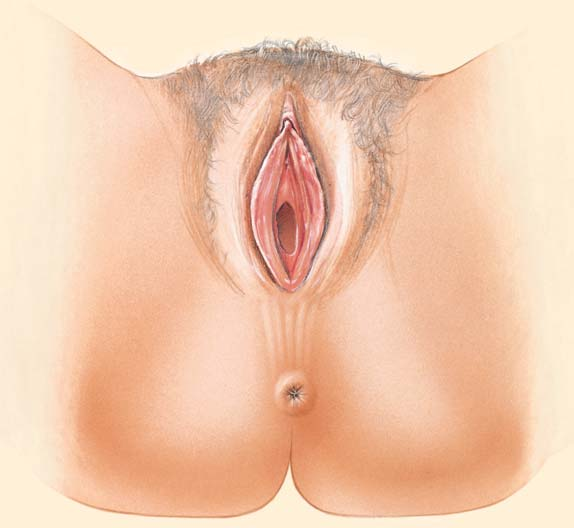
Reproducción 1089
En la TABLA 50-2 se enumeran las acciones de las principales hormonas reproductivas femeninas. Así como la testosterona en el hombre, los estrógenos son responsables del crecimiento de los órganos sexuales en la pubertad, del crecimiento del cuerpo y del desarrollo de las características sexuales secundarias. En la mujer, éstas incluyen el desarrollo de los pechos, el ensanchamiento de la pelvis y el desarrollo y distribución característicos de los músculos y grasa responsables de la forma del cuerpo femenino. En las mujeres, la pubertad suele empezar entre los 10 y 12 años de edad y continúa hasta entre los 14 y 16. Las hormonas del hipotálamo, la pituitaria anterior y los ovarios regulan el ciclo menstrual , la secuencia mensual de eventos que preparan al cuerpo para un posible embarazo. (El término ciclo menstrual algunas veces se usa en un sentido más restringido para referirse a los cambios que ocurren en el útero; aquí se le usa para incluir los ciclos ovárico y uterino). El ciclo menstrual se presenta cada mes desde la pubertad hasta la menopausia , que ocurre aproximadamente a los 50 años de edad.
La lactación es la producción de leche para alimentar al bebé. Durante el embarazo, altas concentraciones de las hormonas reproductivas femeninas, estrógeno y progesterona, estimulan a los pechos para aumentar su tamaño. Durante los primeros días después del nacimiento del bebé, las glándulas mamarias producen un fl uido denominado calostro , que contiene proteínas y anticuerpos, aunque poca grasa. Cuando el bebé chupa, la hormona prolactina , secretada por la pituitaria anterior, estimula la producción de leche. Amamantar también estimula a la pituitaria posterior para liberar oxitocina . Esta hormona estimula la expulsión de leche de los alveolos hacia los conductos. La alimentación con el pecho promueve la recuperación del útero porque la oxitocina liberada durante la lactación estimula al útero para contraerse al tamaño que tenía antes del embarazo. Asimismo, la lactación ofrece ventajas para el bebé. Promueve el vínculo entre la madre y el hijo, y proporciona leche a la medida de las necesidades del bebé. La leche materna contiene una variedad de células inmunológicas (células B, células T, neutrófi los y macrófagos), así como anticuerpos. Como resultado, los bebés alimentados con leche materna tienen menor incidencia de diarrea, infecciones de los oídos y respiratorias e ingresos al hospital que los niños alimentados con leche de fórmula.
El hipotálamo, la glándula pituitaria y los ovarios regulan la reproducción femenina
Así como en el hombre, la regulación de la reproducción femenina implica muchas hormonas y otras moléculas de señalización. En el hombre, la concentración de hormonas sexuales es mantenida en un intervalo estrecho. Por el contrario, la concentración de hormonas sexuales femeninas cambia notablemente durante el transcurso de cada ciclo mensual.
Tejido adiposo
Músculo pectoral mayor
Lóbulos de tejido glandular
Alveolos Conducto
Pezón
Areola
FIGURA 50-13 Estructura del pecho de una mujer madura El pecho contiene lóbulos de tejido glandular. Este tejido está formado por alvéolos, grupos de células glandulares.
Principales hormonas reproductivas femeninas
Tejido Glándula y objetivo hormonas endocrinas principal Acciones principales
Hipotálamo Hormona liberadora Pituitaria Estimula la liberación de de gonadotropina anterior HSF y HL (HLGn)
Pituitaria anterior Hormona estimulante Ovario Estimula el desarrollo del folículo (HSF) de los folículos y la secreción de estrógeno
Hormona Ovario Estimula la ovulación y luteinizante (HL) el desarrollo del cuerpo lúteo
Prolactina Pecho Estimula la producción de leche (luego de que el pecho ha sido preparado por el estrógeno y la progesterona)
Pituitaria posterior Oxitocina Útero Estimula la contracción y la liberación de prostaglandina
Glándulas Estimula la expulsión de mamarias leche hacia los conductos
Ovarios Estrógeno (estradiol) General Estimula el crecimiento de los órganos sexuales en la pubertad y el desarrollo de las características sexuales secundarias
Estructuras Induce la maduración; reproductivas estimula la preparación mensual del endometrio para el embarazo; hace más delgado y alcalino el moco cervical
Progesterona Útero Completa la preparación del endometrio para el embarazo
Inhibina Pituitaria Inhibe la secreción de HSF anterior
TABLA 50-2
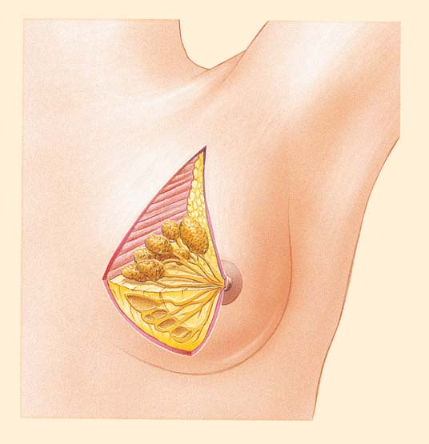
1090 Capítulo 50
La fase preovulatoria comprende las dos primeras semanas del ciclo
Los primeros cinco días de la fase preovulatoria se conocen como fase menstrual . De hecho, el primer día del ciclo menstrual está marcado por la aparición de la menstruación , la descarga mensual de sangre y tejido del endometrio a través de la vagina. Durante la primera parte de la fase preovulatoria, el hipotálamo libera hormona liberadora de gonadotropina
Aunque hay grandes variaciones, un ciclo menstrual típico dura 28 días ( FIGURA 50-14 ). Las dos primeras semanas del ciclo menstrual constituyen la fase preovulatoria . La ovulación ocurre alrededor del decimocuarto día del ciclo. Las semanas tercera y cuarta del ciclo menstrual son la fase postovulatoria . A medida que lea la siguiente descripción del ciclo menstrual, siga los pasos ilustrados en la FIGURA 50-15 .
¿Cuán común es el cáncer de mama? Según la American Cancer Society, el cáncer de mama es el más común entre las mujeres, aparte del cáncer de piel. Es una de las causas principales de muerte por cáncer en las mujeres, sólo después del cáncer de pulmón. Cada año se diagnostican casi 200,000 nuevos casos de cáncer de mama invasivo sólo en Estados Unidos. Algunos factores de riesgo para el cáncer de mama incluyen el sobrepeso (especialmente después de la menopausia), el uso de alcohol (más de dos tragos al día) y la falta de ejercicio. Algunos estudios muestran que fumar también es un factor de riesgo. Las mujeres con una historia familiar de cáncer de mama están en mayor riesgo. Se estima que 10% de los casos de cáncer de mama son familiares y alrededor de la mitad de estas pacientes tienen mutaciones en un gen supresor de cáncer, el BRCA1 o el BRCA2 . Cuando el producto proteínico normal del gen BRCA1 es fosforilado por una proteína quinasa específi ca, interactúa con el producto proteínico normal del gen BRCA2 y otros compuestos para reparar el daño al ADN. Las mujeres con una historia familiar de cáncer de mama (o de ovarios) deben buscar asesoría genética y considerar someterse a pruebas genéticas. Para quienes el resultado es positivo, ahora hay fármacos comerciales que disminuyen el riesgo de cáncer. Algunas mujeres escogen la cirugía preventiva. Aproximadamente 50% de los casos de cáncer de mama empiezan en el cuadrante superior externo del seno. A medida que un tumor maligno crece, puede adherirse al tejido profundo de la pared torácica. Algunas veces se extiende hacia la piel, provocando hoyuelos. Por último, el cáncer se extiende al sistema linfático. Alrededor de dos tercios de los casos de cáncer de mama presentan metástasis (dispersión) hacia los nodos linfáticos para la época en que son diagnosticados por primera vez. Cuando el diagnóstico y el tratamiento comienzan temprano, 86% de las pacientes sobreviven durante 5 años y 65% sobreviven durante 20 años o más. Las pacientes sin tratamiento tienen una tasa de supervivencia de sólo 20%. Los métodos comunes para el tratamiento del cáncer de mama incluyen la mastectomía
(extirpación quirúrgica del seno), quimioterapia y tratamiento de radiación. La lumpectomía (extirpación quirúrgica sólo de la parte afectada del seno) en conjunción con tratamiento de radiación parece ser tan efi caz como la mastectomía en algunos casos. La quimioterapia es un tratamiento con fármacos que mata las células cancerosas. La quimioterapia a menudo se administra después de una intervención quirúrgica para matar cualquier célula cancerosa que hubiera podido desprenderse del tumor principal y escapado a la extirpación quirúrgica. Incluso en las primeras etapas del cáncer puede ocurrir metástasis ; las células cancerosas pueden alejarse del tumor principal y establecer nuevos tumores en otras partes del cuerpo. La terapia dirigida implica el uso de fármacos más recientes especialmente dirigidos a ciertos cambios en las células cancerosas. La terapia dirigida a menudo se usa junto con quimioterapia. Por ejemplo, en alrededor
una de cada cinco personas con cáncer de mama, la HER2, una proteína que promueve el crecimiento, está presente en cantidades anormalmente grandes sobre la superfi cie de las células cancerosas. Las células cancerosas con HER2 se dispersan de manera más agresiva que otras del mismo tipo sin HER2. Un anticuerpo monoclonal denominado Herceptina ayuda a hacer más lento el crecimiento de estas células. La Herceptina también podría estimular al sistema inmunológico para destruir de manera más efi caz el cáncer. Ahora se dispone también de anticuerpos monoclonales dirigidos a los nuevos vasos sanguíneos que abastecen a los tumores. Aproximadamente dos tercios de los cánceres de mama tienen receptores de estrógeno o progesterona. El crecimiento de este tipo de cáncer es mejorado por la circulación de estrógenos y progesterona. La extirpación de los ovarios de las pacientes con estos tumores alivia los síntomas y puede ocasionar la remisión de la enfermedad durante meses e inclusive años. Se han desarrollado fármacos (por ejemplo tamoxifeno e inhibidores de la aromatasa) que se contraponen a la acción de los receptores de estrógeno. Según la American Cancer Society, cuando el cáncer de mama está confi nado al seno, la tasa de supervivencia de 5 años es casi de 100%. Puesto que la detección temprana del cáncer de mama incrementa bastante las posibilidades de cura y sobrevivencia, la autoexaminación y la detección son importantes. La American Cancer Society recomienda que las mujeres entre 20 y 39 años de edad deben someterse a un examen clínico de mama realizado por un profesional por lo menos cada tres años. Después de los 40 años de edad, las mujeres deben practicarse un examen anual de mama por parte de un profesional de la salud. Las mujeres de 40 años de edad o más deben realizarse un mamograma al año. La mamografía , un estudio radiológico del tejido suave de seno, es útil para la detección de lesiones muy pequeñas que pudieran no ser identifi cadas por exámenes rutinarios. En la mamografía, las lesiones aparecen en una placa de rayos X como áreas de densidad incrementada (vea la fi gura).
Preguntas acerca de
CÁNCER DE MAMA
© Doctor Kan/Dreamstime
Mamograma que muestra la zona del cáncer de mama. El cáncer se ve como una masa densa ( azul ) en este mamograma coloreado. El tejido fi broso sano ( lavanda ) sostiene las estructuras glandulares.
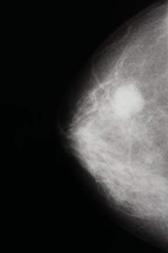
Reproducción 1091
trógeno se difunde hacia la sangre, pero la hormona también posee una acción autocrina sobre las células granulosas que la producen y un efecto paracrino sobre las células granulosas próximas (vea en el capítulo 49 más detalles acerca granulosas autocrina y paracrina). La cantidad de estrógeno secretada por las células granulosas es mejorada por la acción de la HL sobre las células de la teca. La HL estimula la proliferación de las células de la teca y su producción de andrógenos, los cuales se difunden hacia las células granulosas donde se convierten en estrógeno. El estró-
( HLGn ). Ésta estimula a la pituitaria anterior para liberar hormonas gonadotrópicas: hormona estimulante del folículo ( HSF ) y hormona luteinizante ( HL ). Las hormonas HLGn, HSF y HL son las mismas que ayudan a regular la reproducción en el hombre. La fase preovulatoria también se conoce como fase folicular , porque durante este período la HSF estimula a unos cuantos folículos para empezar su desarrollo. La HSF también estimula a las células granulosas del folículo para que se multipliquen y produzcan estrógeno. Algo del es-
Las hormonas gonadotrópicas y las hormonas ováricas regulan la secuencia mensual de eventos que tienen lugar dentro del ovario y el útero.
HORMONAS GONADOTRÓPICAS
HORMONAS OVÁRICAS
LH
FSH
Estrógeno Progesterona
Folículo en desarrollo
Endometrio del útero
Folículo maduro Cuerpo lúteo Cuerpo lúteo degenerado
Glándulas Sangre
Días
1 2 4 6 8 10 12 14 16 18 20 22 24 26 28 2 1 3
Menstruación
Fase preovulatoria Fase postovulatoria Ovulación
Ovulación
Concentración de hormonas gonadotrópicas pituitarias. Observe que las concentraciones de HSF y de HL alcanzan un pico justo antes de la ovulación ( línea punteada ).
Concentración de hormonas ováricas. La concentración de estrógeno alcanza un pico durante la fase preovulatoria tardía. La progesterona, secretada principalmente por el cuerpo lúteo, alcanza su concentración máxima durante la fase postovulatoria.
Ciclos ovárico y uterino. Las concentraciones de hormonas se correlacionan con cambios que ocurren en los ovarios y el útero. Si ocurre fertilización, el cuerpo lúteo continúa secretando estrógeno y progesterona, y no ocurre la menstruación.
FIGURA 50-14 Animada Regulación endocrina del ciclo menstrual Cuando no ocurre la fertilización, el ciclo menstrual se repite aproximadamente cada 28 días. Observe los cambios en las concentraciones de hormona durante el ciclo menstrual. (HSF, hormona estimulante del folículo; HL, hormona luteinizante).
PUNTO CLAVE
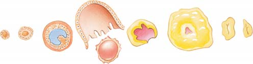
1092 Capítulo 50
de la pituitaria y también puede actuar sobre el hipotálamo, disminuyendo la secreción de HLGn. Además, las células granulosa secretan inhibina , una hormona que inhibe principalmente la secreción de HSF. Como resultado de estas señales de retroalimentación negativa, la concentración de HSF disminuye. A medida que su concentración en la sangre alcanza un pico durante la fase preovulatoria tardía, el estrógeno señala a la pituitaria anterior que secrete HL. Éste es un mecanismo de retroalimentación positiva. El pico
geno estimula el crecimiento del endometrio, que empieza a engrosarse y a desarrollar nuevos vasos y glándulas sanguíneos. En términos generales, después de la primera semana del ciclo menstrual, sólo un folículo continúa desarrollándose. Sus células granulosas se vuelven sensibles a la HL y también a la HSF. Este folículo dominante ahora secreta sufi ciente estrógeno para provocar un incremento en la concentración de estrógeno en la sangre. Aunque aún sigue a una concentración relativamente baja , el estrógeno inhibe la secreción de HSF
El hipotálamo, la pituitaria anterior y el ovario secretan hormonas que regulan el ciclo menstrual por medio de sistemas de retroalimentación.
Pituitaria posterior
Hipotálamo
Pituitaria anterior
HLGn
HLGn
Ovario Folículo
HL HSF (estimula el desarrollo del folículo)
Estrógeno
Estimula el crecimiento del endometrio
Hipotálamo
Pituitaria anterior
Pituitaria posterior Pituitaria posterior
HLGn
Ovario
Oocito
Cuerpo lúteo
Pico de HL Estrógeno
Hipotálamo
Pituitaria anterior
HLGn
HLGn HLGn
Ovario
Estrógeno Progesterona Inhibina Inhibina
Estimula el crecimiento y la diferenciación del endometrio
HL
? ?
Inhibe la HSF Inhibe la HSF
Principalmente HSF
1
2 3
4
5
6
7
8
9
10
- Fase preovulatoria tardía.
Una elevada concentración de estrógeno posee un efecto de retroalimentación positiva sobre la pituitaria y el hipotálamo.
Un pico de HL estimula la ovulación.
7
8
12
11
- Fase preovulatoria.
El hipotálamo libera HLGn
La HSF estimula el desarrollo del folículo
La HL estimula indirectamente la producción de estrógeno
El estrógeno estimula el engrosamiento del endometrio
El estrógeno tiene un efecto de retroalimentación negativa sobre la pituitaria y el hipotálamo.
La inhibina impide la secreción de HSF por parte de la pituitaria.
1
2
3
4
5
6
- Fase postovulatoria.
La HL estimula el desarrollo del cuerpo lúteo.
Una elevada concentración de progesterona inhibe fuertemente al hipotálamo y la pituitaria anterior. Disminuye la secreción de HSF y HL.
El estrógeno tiene un efecto de retroalimentación negativa sobre el hipotálamo y la pituitaria anterior.
La inhibina impide la secreción de HSF por la pituitaria.
9
10
12
11
FIGURA 50-15 Mecanismos de retroalimentación en la regulación endocrina de la reproducción femenina Las fl echas verdes indican estimulación; las rojas, inhibición. (HLGn, hormona liberadora de gonadotropina; HSF, hormona estimulante del folículo; HL, hormona luteinizante).
PUNTO CLAVE
Reproducción 1093
La mayoría de los mamíferos tienen ciclo estral
Sólo los humanos y algunos otros primates tienen ciclos menstruales. La mayoría de los otros mamíferos tienen ciclos estrales . Aunque sus órganos y hormonas reproductivos suelen ser semejantes, hay algunas diferencias importantes. En los animales con ciclos estrales, el útero reabsorbe el revestimiento engrosado del endometrio en caso de no ocurrir concepción. Como acaba de aprender, en animales con ciclo menstrual, el endometrio es expulsado durante la menstruación. Las hembras animales con ciclos estrales están sexualmente receptivas (“en celo”) sólo durante la fase estral del ciclo. La frecuencia y duración de la fase estral varía. En las perras, la fase estral suele ocurrir dos veces al año y dura entre 4 y 13 días. En las hembras de los roedores, el estro ocurre cada 4 o 5 días. En las gatas, los ciclos pueden ocurrir aproximadamente cada 3 semanas y la fase estral promedia 7 días. La etapa de reposo del ciclo es prolongada en otoño y a principios del invierno. (¿Por qué este hecho podría ser ventajoso?) Los animales con ciclos estrales suelen mostrar cambios fi siológicos y psicológicos que señalan su preparación sexual a las parejas potenciales.
Repaso
■ ¿En qué se diferencia la oogénesis de la espermatogénesis? ¿Por qué se producen tantos espermatozoides en el hombre y tan pocos óvulos en la mujer?
■ ¿Cuál es la función del cuerpo lúteo? ¿Cuál es el destino del cuerpo lúteo cuando el óvulo no es fertilizado?
■ ¿Cuáles son las acciones específicas de la HSF y la HL en la hembra? ¿Y de los estrógenos? ¿Y de la progesterona?
50.4 FERTILIZACIÓN, EMBARAZO Y NACIMIENTO
OBJETIVO DE APRENDIZAJE
8 Describir el proceso de fertilización humana y resumir las acciones de las hormonas que regulan el embarazo y el nacimiento.
Las hormonas desempeñan papeles cruciales en la preparación del cuerpo para la fertilización y el embarazo. Estas moléculas de señalización también son críticas para iniciar el proceso de nacimiento.
La fertilización es la unión del espermatozoide y el huevo
Juntos, la fertilización y el establecimiento consecuente del embarazo se conocen como concepción. Después de la eyaculación hacia al tracto reproductivo femenino, los espermatozoides suelen permanecer vivos y preservar su capacidad de fertilizar el óvulo durante alrededor de 48 horas. Sin embargo, los espermatozoides pueden sobrevivir hasta 5 días en el tracto reproductivo femenino. El óvulo permanece fértil por entre 12 y 24 horas después de la ovulación. En consecuencia, en un ciclo menstrual muy regular de 28 días, las relaciones sexuales a la mitad de este ciclo tienen bastantes probabilidades de resultar en fertilización. Sin embargo, muchas mujeres no tienen ciclos menstruales regulares y una variedad de factores pueden provocar un ciclo irregular incluso en mujeres que suelen ser constantes. Cuando las condiciones en la vagina y en el cuello del útero son favorables, los espermatozoides comienzan a llegar al sitio de fertilización
de HL secretada a la mitad del ciclo menstrual estimula la maduración fi nal del folículo. El pico de HL también estimula la ovulación , la expulsión del oocito secundario del ovario. Las células granulosas del folículo disminuyen su producción de estrógeno, resultando en un decremento temporal en la concentración de estrógeno.
El cuerpo lúteo se desarrolla durante la fase postovulatoria
La fase postovulatoria, también denominada fase lútea , empieza después de la ovulación. La HL estimula el desarrollo del cuerpo lúteo, que secreta una gran cantidad de progesterona y estrógeno, así como de inhibina. Estas hormonas estimulan al útero para que prosiga su preparación hacia el embarazo. La progesterona estimula glándulas diminutas en el endometrio para que secreten un fl uido rico en nutrientes. Durante la fase postovulatoria, la elevada concentración de progesterona en la sangre, junto con el estrógeno, inhibe la secreción de HLGn, HSF y HL. Se cree que la progesterona actúa principalmente sobre el hipotálamo. La inhibina actúa sobre la pituitaria para inhibir aún más la secreción de HSF. Como resultado de estos sistemas de retroalimentación negativa, las concentraciones de HSF y HL son bajas durante la fase postovulatoria y no se desarrollan folículos nuevos. En caso de que el oocito secundario no sea fertilizado, el cuerpo lúteo comienza a degenerarse al cabo de aproximadamente ocho días. Aunque el mecanismo responsable de la degeneración del cuerpo lúteo todavía no se comprende a plenitud, un factor puede ser la disminución de HL. Además, el cuerpo lúteo puede volverse menos sensible a la HL. Cuando el cuerpo lúteo deja de secretar progesterona y estrógeno, la concentración de estas hormonas en la sangre desciende notoriamente. Como resultado, pequeñas arterias en el endometrio se contraen, reduciendo el suministro de oxígeno. La menstruación, que señala el inicio de un nuevo ciclo, empieza cuando las células mueren y los vasos sanguíneos dañados se rompen y sangran. Las concentraciones de estrógeno y progesterona ahora son demasiado bajas para inhibir la pituitaria anterior, de modo que la secreción de HSF y HL crece de nuevo.
El ciclo menstrual se detiene en la menopausia
Alrededor de los 51 años de edad, la mujer entra en la menopausia, un período en que ya no se producen óvulos y la mujer se vuelve infértil. Aparentemente, un cambio en el hipotálamo dispara la menopausia. Aunque se producen hormonas gonadotrópicas, los ovarios se vuelven menos sensibles a éstas y los oocitos en los ovarios empiezan a degenerarse. Los ovarios secretan menos estrógeno y progesterona, y el ciclo menstrual se vuelve irregular y termina por detenerse. Las mujeres en la menopausia algunas veces experimentan una sensación de calor (“bochornos”), quizá debido a una regulación menos estable del fl ujo de sangre a través de los vasos sanguíneos en la piel. Los incrementos periódicos de sangre caliente por estos vasos sanguíneos pueden provocar la sensación de bochorno. Otros cambios fi siológicos asociados con la menopausia incluyen sudores nocturnos, cambios en el estado de ánimo y aumento de peso. Aunque su uso es controvertido, la terapia de sustitución de hormonas con estrógeno y progesterona alivia muchos de los síntomas de la menopausia. En contraste con los humanos, las hembras de otras especies mantienen su capacidad de reproducirse a lo largo de toda su existencia. No experimentan menopausia. Los investigadores han sugerido que el período postmenopáusico infértil permite que las mujeres mayores ayuden a sus hijas con los nietos, aumentando su tasa de supervivencia. Esta práctica ayuda a asegurar que los genes de las mujeres más ancianas sean transmitidos a las generaciones futuras.
1094 Capítulo 50
del esperma de la vagina hacia el útero. Durante el resto del ciclo menstrual, el moco cervical es demasiado grueso y pegajoso para la penetración de los espermatozoides.
en el oviducto superior menos de 30 minutos después de la eyaculación. En el instante de la ovulación, cuando la concentración de estrógeno es alta, el moco cervical tiene una consistencia delgada que permite el paso
¿Cuáles son algunos beneficios de la tecnología reproductiva? Aproximadamente cinco millones de parejas en Estados Unidos padecen infertilidad, la incapacidad de lograr la concepción a pesar de no usar ningún anticonceptivo por lo menos durante un año. Alrededor de 30% de los casos implican factores tanto masculinos como femeninos. La infertilidad masculina algunas veces está asociada con una baja cantidad de espermatozoides. Entre las causas comunes de infertilidad femenina están la falta de ovulación, la producción de huevos infértiles (común en las mujeres mayores) y cicatrices en el oviducto (a menudo ocasionadas por enfermedad pélvica infl amatoria). Las mujeres con oviductos bloqueados suelen ovular e incubar un embrión normalmente aunque requieren asistencia clínica para llevar el joven embrión al útero. En Estados Unidos, más de tres millones de parejas infértiles consultan a profesionales de la salud cada año. Algunas reciben ayuda con tratamiento convencional; por ejemplo, con terapia hormonal que regula la ovulación o con medicamentos para la fertilidad. Pero más de 40,000 parejas necesitan ayuda clínica más complicada. Acuden a técnicas reproductivas asistidas de alta tecnología que han sido desarrolladas mediante investigación sobre la reproducción y embriones humanos. Por ahora estas técnicas son costosas y su tasa de éxito es baja, inferior a un tercio. El procedimiento reproductivo asistido más común es la inseminación artifi cial , en la que se usa un catéter para inyectar esperma directamente hacia el cuello del útero. La transferencia hacia el útero se denomina inseminación intrauterina ( IUI por sus siglas en inglés ). Anualmente se practican más de 600,000 inseminaciones intrauterinas con una tasa de éxito aproximada de 10%. Si un hombre es infértil debido a la baja producción de esperma, éste puede ser concentrado o, de manera alternativa, es posible usar el de un donante. Aunque el esperma del donante suele permanecer anónimo para los padres biológicos potenciales, sus califi caciones genéticas son revisadas por médicos. Con una fertilización in vitro ( FIV ), una mujer toma un medicamento para la fertilidad que induce la ovulación de varios huevos. Los huevos son recuperados mediante aspiración con aguja a través de la vagina y son colocados en un disco con esperma, la fertilización se lleva a cabo in vitro (fuera del cuerpo de la paciente). Los embriones son cultivados durante tres días y luego revisados para detectar anomalías cromosómicas
o genéticas. Los que están sanos son transferidos hacia el útero a través de la vagina. La inseminación in vitro se practicó por primera vez en Inglaterra en 1978 para ayudar a una pareja que había intentado infructuosamente tener un hijo durante varios años. Desde esa época, miles de “bebés de probeta” han sido concebidos de esta manera y nacido de mujeres previamente infértiles. La tasa de éxito de la fertilización in vitro es superior a 30%; las mujeres menores de 35 años tienen la tasa más alta de embarazo, la cual declina con la edad. En la transferencia intratubárica de gametos ( GIFT por sus siglas en inglés), un laparoscopio (un instrumento de fi bra óptica) se usa para guiar la transferencia de huevos y esperma hacia el oviducto de una mujer por medio de una pequeña incisión en el abdomen. Cada año se realizan más de 4000 de estos procedimientos costosos con una tasa de éxito aproximada de 28%. En la transferencia intratubárica de cigotos ( ZIFT por sus siglas en inglés), los óvulos son fertilizados en el laboratorio y se usa un laparoscopio para guiar la transferencia de los cigotos resultantes hacia el oviducto. En estos procedimientos es posible usar los propios óvulos de la mujer. Sin embargo, si ella no produce huevos fértiles, pueden obtenerse de una donante ( donación de oocitos ).
Otro procedimiento nuevo es la madre sustituta . Un embrión es extirpado de la madre natural e implantado en otra mujer. La madre adoptiva puede acoger el embrión en desarrollo hasta su nacimiento o temporalmente hasta que es implantado de nuevo en la madre original o en una sustituta. Esta técnica ha demostrado ser útil para los criadores de animales. Por ejemplo, los embriones de ovejas de concurso pueden implantarse temporalmente en conejas para su fácil traslado aéreo y su posterior implante en una oveja anfi triona, quizá de menor calidad. La madre sustituta permite que un animal con rasgos genéticos superiores produzca más descendencia de lo que sería posible de manera natural. Este procedimiento también se usa para incrementar las poblaciones de ciertas especies en peligro (vea la fi gura). Ya hay tecnología para congelar los gametos o embriones de muchas especies, incluso humanos, y luego trasplantarlos a sus donantes o madres anfi trionas. El congelamiento de huevos puede ser una estrategia efi caz para mujeres con cáncer que siguen un tratamiento de quimioterapia o para jóvenes mujeres que aún no están listas para ser madres pero desean preservar huevos jóvenes con menor riesgo de tener anomalías cromosómicas. Estos huevos pueden implantarse más adelante.
Preguntas acerca de
NUEVOS ORÍGENES
Cortesía de Betsy Dresser
Bongo recién nacido con su madre sustituta, un elan. Cuando era un joven embrión, el bongo fue trasplantado en el útero del elan, donde se implantó y desarrolló. Los bongos son una especie rara y elusiva que habita los bosques densos en África. Los elan, que son más grandes y comunes, habitan en áreas abiertas.
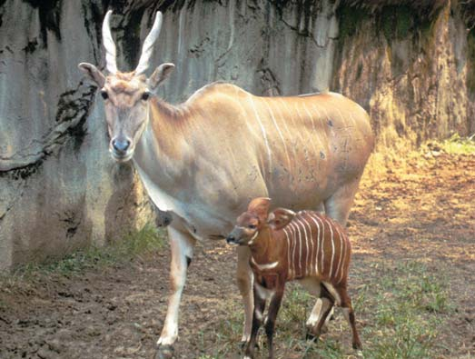
Reproducción 1095
Las membranas que se desarrollan alrededor del embrión secretan gonadotropina coriónica humana ( GCh ), una hormona peptídica que envía señales al cuerpo lúteo de la madre para que continúe funcionando. (La presencia de GCH en la orina o la sangre se usa como una prueba temprana de embarazo). La concentración de estrógeno y progesterona
Una vez que los espermatozoides entran en el útero, contracciones de la pared muscular uterina ayudan a transportarlos. Cuando llegan al oviducto, contracciones del músculo liso en la pared del oviducto ayudan a los espermatozoides a desplazarse hacia el huevo. Las contracciones uterina y del oviducto son inducidas por la elevada concentración de estrógeno presente justo antes de la ovulación. Las prostaglandinas en el semen contribuyen a la contracción de este músculo. La motilidad propia de los espermatozoides es importante, especialmente para acercarse y fertilizar el oocito secundario. También, se cree que el oocito secundario libera un compuesto que atrae a los espermatozoides. Cuando un espermatozoide encuentra un huevo, en su acrosoma se desarrollan aberturas, exponiendo enzimas que digieren un camino a través de la zona pelúcida que rodea al oocito secundario. Tan pronto como un espermatozoide penetra en el oocito secundario, ocurren cambios que impiden la entrada de otro. Cuando el espermatozoide fertilizador entra, suele perder su fl agelo ( FIGURA 50-16 ). El ingreso del espermatozoide estimula al oocito secundario para completar su segunda división meiótica. Luego, la cabeza del espermatozoide haploide se hincha para formar el pronúcleo masculino y se une con el pronúcleo femenino para formar el núcleo diploide del cigoto. El proceso de fertilización se describe con mayor detalle en el capítulo 51 (vea también Preguntas acerca de: Nuevos orígenes ). Si sólo un espermatozoide es necesario para fertilizar un oocito secundario, ¿por qué son eyaculados casi 200 millones? Muchos mueren como resultado de un pH desfavorable o al ser fagocitados por glóbulos blancos y macrófagos en el tracto femenino. Sólo unos cuantos cientos tienen éxito para llegar al oviducto correcto y alcanzar la vecindad del oocito secundario. Además, las enzimas liberadas por los acrosomas de muchos espermatozoides son necesarias para vencer las barreras que rodean al oocito secundario. Si el oocito secundario es fertilizado, se inicia el desarrollo mientras el embrión aún se encuentra en el oviducto. Después de tres o cuatro días, la concentración de progesterona es sufi cientemente alta para inducir cambios que permiten que el oviducto mueva el embrión hacia el útero. El embrión es desplazado por contracciones musculares y por los cilios que revisten el oviducto. Para cuando entra en el útero, ha ocurrido una escisión y el embrión consta de una bola de aproximadamente 32 células. Después de fl otar con libertad en el útero durante otros tres o cuatro días, el embrión (que se ha desarrollado en un blastocito ), empieza a implantarse en el grueso endometrio. La implantación ocurre alrededor del séptimo día después de la fertilización ( FIGURA 50-17 ). (Vea en el capítulo 51 el análisis del desarrollo).
Las hormonas son necesarias para mantener el embarazo
El estrógeno y la progesterona son necesarios para mantener las condiciones requeridas para el embarazo. El estrógeno estimula el desarrollo de la pared uterina, incluyendo el músculo necesario para expulsar al feto durante el parto. La progesterona inhibe las contracciones uterinas de modo que el feto no sea expulsado demasiado pronto. Debido a que estas hormonas también inhiben la HSF y la HL, no se desarrollan nuevos folículos y el ciclo menstrual se detiene durante el embarazo.
Corona radiada Zona pelúcida
Primer cuerpo polar
Cuerpo polares
Óvulo Pronúcleos Oocito secundario
El espermatozoide libera una enzima que ayuda a dispersar la capa de células del folículo (corona radiada) que rodean al oocito secundario.
Después que la célula espermática entra, el oocito secundario completa su segunda división meiótica, produciendo un óvulo y un cuerpo polar.
Los pronúcleos del espermatozoide y el óvulo se unen, produciendo un cigoto con el número diploide de cromosomas.
10 μ m
- Micrografía MEB mejorada con color de células espermáticas humanas rodeando un óvulo de prueba. El esperma está siendo probado en cuanto a viabilidad.
David Scharf/Peter Arnold, Inc.
FIGURA 50-16 Animada Fertilización
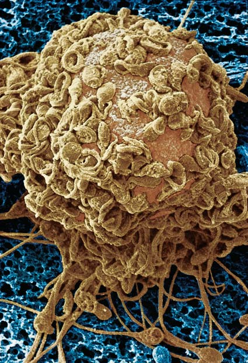
1096 Capítulo 50
y regular que provoca que el cuello del útero cambie en preparación para el parto. El parto puede dividirse en tres etapas. Durante la primera, que suele durar entre 8 y 10 horas, las contracciones el útero mueven el feto hacia el cuello del útero, provocando que éste se dilate (se abra) hasta un diámetro máximo de 10 cm. El cuello del útero se vuelve borroso ; es decir, se adelgaza de modo que la cabeza del feto puede pasar por ahí. Durante la primera etapa del parto, el amnios (la membrana que forma una bolsa llena de fl uido alrededor del embrión o feto) suele romperse y liberar aproximadamente un litro de líquido amniótico que fl uye a través de la vagina. Durante el proceso de parto opera un ciclo de retroalimentación positiva. A medida que la cabeza del bebé empuja contra el cuello del útero, un acto refl ejo hace que el útero se contraiga. La contracción fuerza de nuevo la cabeza contra el cuello del útero, lo cual resulta en otra contracción, y el ciclo de retroalimentación positiva se repite una y otra vez hasta que el bebé desciende por el cuello del útero. Durante la segunda etapa, que en condiciones normales suele durar entre 20 minutos y una hora, el feto pasa por el cuello del útero y la vagina, y nace ( FIGURA 50-18 ). Con cada contracción uterina, la mujer puja, de modo que el feto es expulsado por las fuerzas combinadas de las contracciones del útero y de los músculos abdominales. Al nacer, el bebé sigue unido a la placenta por el cordón umbilical. Las contracciones del útero empujan mucha de la sangre fetal de la placenta hacia el bebé. El cordón es atado y cortado, separando el bebé de la madre. (El muñón del cordón se seca gradualmente hasta que no queda sino la cicatriz, el ombligo ). Durante la tercera etapa del parto, que puede durar de 5 a 30 minutos después del nacimiento, la placenta y las membranas fetales se desprenden del revestimiento del útero por medio de otra serie de contracciones y son expulsadas. (El proceso se conoce como expulsión de la placenta ). En esta etapa se les denomina colectivamente placenta a los tejidos que son expulsados de la vagina una vez que el bebé ha nacido. Durante el parto, el obstetra puede administrar oxitocina para incrementar las contracciones del útero o puede ayudar en el parto con fórceps especiales o una aspiradora. En algunas mujeres, la abertura entre los huesos pélvicos es demasiado pequeña para permitir el paso del bebé por la vía vaginal. En esta situación, el obstetra lleva a cabo una sección cesárea , un procedimiento quirúrgico en el que el bebé nace a través de una incisión hecha en las paredes abdominales y uterinas. Una sección cesárea también puede efectuarse si la posición del bebé impide el parto normal o si existen señales de sufrimiento fetal.
Repaso
■ Si sólo se requiere un espermatozoide para fertilizar un huevo, ¿por qué se liberan tantos?
■ ¿Cuál es la función de la GCh?
■ ¿Cuáles son las acciones del estrógeno y la progesterona para mantener el embarazo?
■ ¿Cuál es el papel del estrógeno para iniciar el proceso de parto? ¿Y de la oxitocina?
permanece alta en todo el embarazo. Durante los dos primeros meses, el cuerpo lúteo secreta casi todo el estrógeno y la progesterona necesarios para mantener el embarazo. Durante este tiempo, las membranas que rodean al embrión, junto con el tejido uterino, forman la placenta , el órgano de intercambio entre la madre y el embrión en desarrollo. Para la décima semana de embarazo, la secreción de GCh disminuye y el cuerpo lúteo comienza a deteriorarse. La placenta asume el control y secreta grandes cantidades de estrógeno y progesterona.
El proceso de nacimiento depende de un sistema de retroalimentación positiva
La duración de un embarazo humano normal es de aproximadamente 38 semanas, a partir del día de fertilización, o alrededor de 40 semanas desde el primer día del último ciclo menstrual. Los mecanismos que terminan el embarazo e inician el proceso de nacimiento, denominados parto , dependen de varias hormonas. Altos niveles de estrógeno secretado por la placenta incrementan bastante el número de receptores de oxitocina en la pared del útero. Como resultado, el útero se vuelve aproximadamente cien veces más sensible a la oxitocina, la hormona que estimula las contracciones. (Participan otras hormonas, pero el análisis de su papel rebasa el alcance de este capítulo). Al fi nal del embarazo, el estiramiento del músculo uterino por el crecimiento del feto en combinación con los efectos de un aumento en la concentración de estrógeno y oxitocina produce intensas contracciones uterinas. Una larga serie de contracciones involuntarias del útero se experimentan como trabajo de parto . El verdadero trabajo de parto empieza cuando ocurren las contracciones uterinas en un patrón frecuente
Menstruación
Ovulación
Semana 1 Semana 2 Semana 3 Semana 4
No hay menstruación
El embrión se implanta en el útero (a) Fertilización y división.
Implantación.
Cambios en el endometrio.
FIGURA 50-17 Eventos que siguen a la fertilización Los ciclos ovárico y uterino son interrumpidos cuando ocurre el embarazo. El cuerpo lúteo no se degenera y la menstruación no se presenta. En lugar de ello, la pared del útero se engruesa todavía más, permitiendo que el embrión se implante y desarrolle en su interior. (La división es la primera serie de particiones por mitosis que convierten el cigoto en un embrión multicelular).
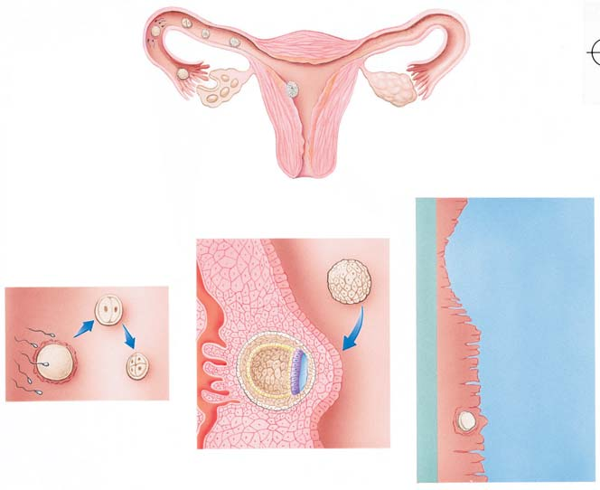
Reproducción 1097
50.5 RESPUESTA SEXUAL HUMANA
OBJETIVO DE APRENDIZAJE
9 Describir los cambios fi siológicos que se llevan a cabo durante la respuesta sexual humana.
Durante las relaciones sexuales , también denominadas coito o copulación , el macho deposita semen en el extremo superior de la vagina. Las complejas estructuras de los sistemas reproductivos masculino y femenino, así como los procesos fi siológicos, endocrinos y psicológicos asociados con la actividad sexual, son adaptaciones que promueven la fertilización del oocito secundario y el desarrollo del embrión resultante. La estimulación sexual resulta en dos respuestas fi siológicas básicas: (1) vasocongestión, la concentración de sangre en las estructuras reproductivas, así como en otras áreas determinadas del cuerpo y (2) aumento en la tensión muscular. La respuesta sexual incluye cuatro fases: excitación sexual, meseta, orgasmo y resolución. El deseo de tener actividad
sexual puede estar motivado por fantasías o pensamientos sexuales. Esta anticipación puede conducir a excitación sexual (física) y a una sensación de placer sexual. Fisiológicamente, la fase de excitación sexual implica la vasocongestión y un aumento en la tensión muscular. La erección del pene es la primera respuesta masculina a la excitación sexual. El pene debe estar erecto para penetrar en la vagina y funcionar en el coito. En la mujer, la vasocongestión ocurre en la vagina, el clítoris y en los senos, y el epitelio vaginal secreta un lubricante espeso. La lubricación vaginal es la primera respuesta femenina a la estimulación sexual efectiva. Durante la fase de excitación, la vagina crece y se expande en preparación para recibir el pene. Si la estimulación erótica continúa, la excitación sexual alcanza la fase de meseta . La vasocongestión y la tensión muscu lar aumentan notoriamente. En ambos sexos, el ritmo cardiaco, la presión arterial y la tasa de respiración crecen. La relación sexual suele iniciarse durante la fase de meseta. El pene crea fricción a medida que se mueve hacia dentro y fuera de la vagina, en acciones denominadas empujes pélvicos. Las sensaciones físicas resultantes de esta fricción y la experiencia fi siológica de la intimidad emocional conducen al orgasmo , el intenso placer físico que es el clímax de la excitación sexual. En la mujer, la estimulación del clítoris aumenta la excitación sexual que lleva al orgasmo. Aunque sólo dura unos cuantos segundos, el orgasmo es la fase de máxima tensión sexual y su liberación. En ambos sexos, el orgasmo está marcado por contracciones rítmicas de los músculos del suelo pélvico y las estructuras reproductivas. Estas contracciones musculares continúan en intervalos aproximados de 0.8 segundos durante varios segundos. Después de las primeras contracciones, su intensidad disminuye, y se vuelven menos regulares y frecuentes. El ritmo cardiaco y la respiración aumentan a más del doble y la presión arterial se incrementa de manera notable, justo antes del orgasmo y durante éste. En todo el cuerpo ocurren contracciones musculoesqueléticas. En el hombre, el orgasmo está marcado por la eyaculación de semen desde el pene. Al orgasmo femenino no lo acompaña la eyaculación de fl uidos. El orgasmo es seguido por la fase de resolución, un estado de bienestar durante el cual el cuerpo es restituido a su estado de no estimulación.
- La madre puja fuerte con sus músculos abdominales, ayudando a empujar al bebé hacia afuera. Cuando la cabeza aparece por completo, el médico o la partera la toma con delicadeza y guía la entrada del bebé hacia el mundo exterior.
Cortesía de Dan Atchinson
- Una vez que la cabeza ha emergido, el resto del cuerpo suele salir fácilmente. El médico aspira suavemente la boca y la faringe para limpiar la vía respiratoria superior de fluido amniótico, moco o sangre. Es en este instante que el recién nacido respira por primera vez.
Cortesía de Dan Atchinson
- El bebé, todavía unido a la placenta mediante el cordón umbilical, es presentado a su madre.
Cortesía de Dan Atchinson
- Durante la tercera etapa del parto, el alumbramiento, la placenta es expulsada.
Cortesía de Dan Atchinson
FIGURA 50-18 El proceso de parto Las contracciones uterinas durante el parto expulsan el feto del útero. En aproximadamente el 95% de todos los nacimientos humanos, el bebé desciende a través del cuello uterino y de la vagina en la posición cabeza abajo.
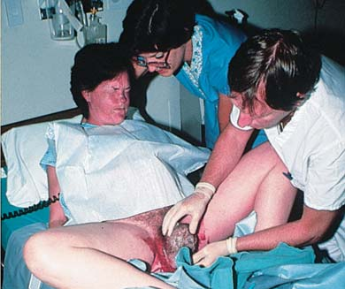
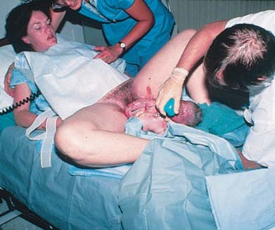
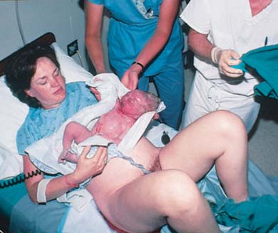
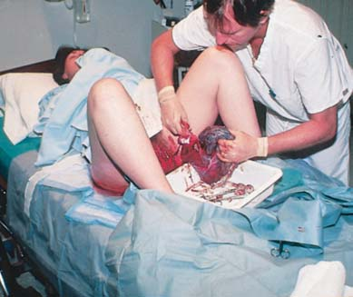
1098 Capítulo 50
La mayoría de las hormonas anticonceptivas impiden la ovulación
Las hormonas anticonceptivas incluyen anticonceptivos orales, inyectables, y en parches, anillos e implantes. Más de 80 millones de mujeres en todo el mundo (más de 8 millones sólo en Estados Unidos) usan anticonceptivos orales. Cuando se toman correctamente, los anticonceptivos orales son efi caces en aproximadamente 99.7% para impedir el embarazo. Se usan para regular los ciclos menstruales, controlar el sangrado y ayudar con los síntomas del menstruo. Las preparaciones más comunes son combinaciones de progestina (progesterona sintética) y estrógeno sintético. (Las hormonas naturales son destruidas por el hígado casi de inmediato, pero las sintéticas son modifi cadas químicamente durante su producción, de modo que pueden ser absorbidas efi cazmente y metabolizadas lentamente). En un régimen usual, una mujer toma una píldora al día durante alrededor de tres semanas. Luego, durante una semana toma una píldora de azúcar que permite que ocurra la menstruación como resultado de la retirada de las hormonas. Un tipo de anticonceptivo oral funciona con base en un régimen de 91 días, reduciendo la menstruación a cuatro veces por año. Otros nuevos anticonceptivos orales están siendo comercializados como métodos para manipular los ciclos menstruales a fi n de que la menstruación sea más breve. Los anticonceptivos orales impiden la ovulación. Cuando los niveles postovulatorios de las hormonas de los ovarios se mantienen en la sangre, el cuerpo es engañado para responder como si la menstruación hubiese ocurrido. La glándula pituitaria es inhibida y no produce la oleada de HL que estimula la ovulación Algunos estudios sugieren que las mujeres mayores de 35 años de edad, las fumadoras o las que tienen otros factores de riesgo, como hipertensión no tratada, no deben ingerir anticonceptivos orales. Las mujeres en esta categoría que toman anticonceptivos orales tienen un riesgo incrementado de morir por accidente cerebrovascular e infarto al miocardio. Dosis bajas de anticonceptivos orales parecen seguras para no fumadoras hasta la época de la menopausia. Los anticonceptivos orales están vinculados con fallecimientos en alrededor de 3 por cada 100,000 usuarias. Este cifra se compara favorablemente con la tasa de mortalidad de 9 por cada 100,000 embarazos. Las tendencias en anticoncepción están orientadas hacia la conveniencia y un mejor cumplimiento. El parche anticonceptivo (Ortho Evra)
Repaso
■ ¿Qué cambios fi siológicos ocurren durante el ciclo de respuesta sexual?
50.6 MÉTODOS ANTICONCEPTIVOS Y ABORTO
OBJETIVO DE APRENDIZAJE
10 Comparar los modos de acción, efi cacia, ventajas y desventajas de los métodos anticonceptivos analizados, incluyendo la esterilización y los anticonceptivos de emergencia; distinguir entre abortos espontáneos e inducidos.
En todo el mundo ocurren alrededor de 180 millones de embarazos al año, lo cual resulta en aproximadamente 100 millones de nacimientos cada año. Los expertos en estudios de población estiman que alrededor de la cuarta parte de estos nacimientos no son planeados. Se estima que cada año se realizan 41 millones de abortos inducidos. Aunque la mayoría de las parejas en el mundo estaría de acuerdo en que es mejor tener hijos por decisión propia que por causas fortuitas, la mayoría no dispone de anticonceptivos. (Más de 100 millones de mujeres casadas en países en desarrollo tienen una necesidad no cumplida de anticonceptivos). En Estados Unidos, casi la mitad de todos los embarazos son no planeados. El embarazo de adolescentes constituye un grave problema. Más de 700,000 adolescentes se embarazan cada año en Estados Unidos, y más de 400,000 dan a luz. Miles de estas muchachas tienen 14 años de edad o menos. La mayoría de los partos de estas jóvenes son no intencionales. Las adolescentes a menudo carecen de medios para protegerse de embarazos no deseados.
Existen muchos métodos anticonceptivos disponibles
Cuando una mujer heterosexual activa fértil no usa ninguna forma de anticonceptivo, sus posibilidades de quedar embarazada durante el transcurso de un año son alrededor de 90%. Cualquier método para separar de manera deliberada las relaciones sexuales de la reproducción es un anticonceptivo (literalmente “contra la concepción”). Desde tiempos remotos los humanos han buscado métodos efi caces para impedir la fertilización y el embarazo. Por supuesto, se pueden evitar al abstenerse de las relaciones sexuales. Algunas parejas evitan tener relaciones sexuales alrededor del período en que ocurre la ovulación. La abstinencia cíclica temporal se denomina método del ritmo o planeación familiar natural . Debido a que es difícil determinar cuándo ocurre la ovulación, dicho método tiene una elevada tasa de fracaso (alrededor de 25%). Los científi cos continúan produciendo una variedad de anticonceptivos con un alto porcentaje de confi abilidad. Algunos de los métodos anticonceptivos más comunes se describen en los siguientes párrafos y en la TABLA 50-3 (vea también la FIGURA 50-19 ). Anticonceptivos orales, dispositivos intrauterinos (DIU) y esterilización femenina representan aproximadamente dos tercios de todas las anticoncepciones practicadas en todo el mundo.
FIGURA 50-19 Algunos anticonceptivos de uso común El único método anticonceptivo para el hombre es el condón, pero los investigadores están desarrollando otros.
DIU Anticonceptivos orales
Diafragma anticonceptivo
Anticonceptivo inyectable (Depo-Provera)
NuvaRing
Condón
Parche (Ortho Evra)
McMurray Photography
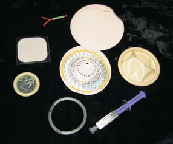
Reproducción 1099
un período de tres semanas. Implanon se considera uno de los métodos anticonceptivos más efi caces que hay.
Los dispositivos intrauterinos se usan ampliamente
El dispositivo intrauterino (DIU) es el método anticonceptivo reversible de mayor uso en todo el mundo, se estima que lo usan 90 millones de mujeres. Sin embargo, en Estados Unidos sólo lo lleva un pequeño porcentaje de mujeres. El DIU es un pequeño dispositivo que es insertado en el útero por un médico profesional. Se ha demostrado la seguridad del DIU que se usa actualmente y es efi caz en alrededor de 99%. Algunas desventajas del DIU incluyen calambres uterinos y sangrado en un pequeño porcentaje de mujeres.
libera estrógeno y progestina a través de la piel. El parche se aplica semanalmente durante tres semanas y se retira en la cuarta. Durante la semana sin parche, la menstruación suele ocurrir porque se ha retirado la hormona. Otro método es un anillo de plástico delgado y fl exible (NuvaRing) que las mujeres pueden aplanar como una banda elástica e insertarlo en la vagina una vez al mes. El anillo libera progestina y estrógeno en las cantidades presentes en los anticonceptivos orales de dosis bajas. La progestina inyectable (Depo-Provera) se administra vía intramuscular cada tres meses. Impide la ovulación al suprimir la función de la pituitaria anterior; también engruesa el moco cervical (lo cual difi culta más que el esperma llegue al huevo). Implanon, un sistema de implante, consta de una simple barra plástica de progestina (del tamaño de una cartera de cerillos de cartón). La progestina es liberada durante
Selección de métodos anticonceptivos
Tasa de Método fracaso* Modo de acción Ventajas Desventajas
Anticonceptivos orales 0.3; 5 Inhibe la ovulación; puede afectar Altamente efi caces, regulan Incomodidad menor en algunas mujeres; el endometrio y el moco cervical el ciclo menstrual no deben usarlo mujeres mayores de 35 e impedir la implantación años de edad que fuman o tienen otros factores de riesgo
Anticonceptivos Alrededor Inhibe la ovulación Efi caces, de larga duración Sangrado menstrual irregular; la fertilidad inyectables de 1 puede no volver por entre 6 y 12 meses después que se deja de usar el anticonceptivo
Dispositivo intrauterino 1; 1 Impide la fertilización, Proporciona protección Calambres, incremento en el fl ujo menstrual, (DIU) algunos DIU pueden continua, bastante efi caz aumento del riesgo de enfermedad pélvica impedir la ovulación durante varios años infl amatoria e infertilidad, no se recomienda para mujeres que no han tenido hijos
Espermicidas; 3; 20 Matan químicamente No se conocen efectos Complicados, deben aplicarse antes de la espumas, jaleas, el esperma colaterales, pueden usarse relación sexual cremas con un condón o diafragma para mejorar su efi cacia
Diafragma 3; 14 El diafragma bloquea No hay efectos colaterales Debe insertarse antes de la relación sexual anticonceptivo mecánicamente la entrada al y dejarse en su sitio durante varias horas (con jalea) † cuello del útero; la jalea después es espermicida
Condón 2.6; 14 Impide mecánicamente No hay efectos laterales; Ligera disminución de la sensación en el que el esperma penetre algo de protección contra hombre; puede romperse en la vagina enfermedades de trasmisión sexual, incluyendo VIH
Ritmo ‡ (planeación 7; 35 Abstinencia durante No se conocen efectos No muy confi able familiar natural) el período fértil colaterales
Retiro 9; 30 El hombre retira el pene Sin efectos colaterales No es confi able; el esperma en el fl uido (coitus interruptus) de la vagina antes de eyacular secretado antes de la eyaculación puede ser sufi ciente para la concepción
Esterilización (ligadura de 0.04 Impide que el oocito El método más confi able Requiere cirugía; se considera permanente trompas) salga del oviducto
Vasectomía 0.15 Impide que el esperma salga El método más confi able Requiere cirugía; se considera permanente del conducto deferente
Azar Alrededor (sin anticonceptivo) de 90
*La cifra menor es la tasa de fracaso del método; la mayor es el fracaso del método más la falla del usuario en la aplicación correcta del método. Con base en el número de fracasos por cada 100 mujeres que usan el método cada año en Estados Unidos.
† La tasa de fracaso es menor cuando el diafragma se usa con espermicidas
‡ Hay muchas variantes del método del ritmo. Para quienes usan sólo el método del calendario, la tasa de fracaso es aproximadamente de 35. Si se toma a diario la temperatura del cuerpo y se lleva un registro cuidadoso (la temperatura sube después de la ovulación) es posible reducir la tasa de fracaso. Cuando las mujeres usan un método para determinar el tiempo de ovulación y tienen relaciones sexuales sólo más de 48 horas después de la ovulación, la tasa de fracaso puede reducirse a alrededor de 7.
TABLA 50-3
1100 Capítulo 50
Un tipo menos común de anticonceptivos de emergencia es la inserción de un DIU de cobre en un lapso inferior a una semana después de haber tenido una relación sexual sin protección. Este método es efi caz en más de 99% para impedir el embarazo.
La esterilización hace que una persona sea incapaz de tener descendencia
La esterilización es el único método anticonceptivo no afectado por incumplimiento o falla en el uso correcto de un método anticonceptivo. En todo el mundo, la esterilización femenina es el método de anticoncepción más común y representa la tercera parte de todos los anticonceptivos usados.
La esterilización masculina se realiza por vasectomía
Se ha estimado que en Estados Unidos se realiza un millón de vasectomías cada año. Después de usar anestesia local, el médico realiza una pequeña incisión en el escroto. Luego, cada conducto deferente es cortado y sellado en sus extremos a fi n de impedir que vuelvan a crecer juntos ( FIGURA 50-20a ). Debido a que la secreción de testosterona y su transporte no son afectados, la vasectomía no afecta la masculinidad. La producción de esperma continúa, aunque a un ritmo mucho más lento y es destruido por macrófagos en los testículos. No se percibe ningún cambio en la cantidad de semen eyaculado porque el esperma representa muy poco del volumen del semen. Al reunir quirúrgicamente los extremos de los conductos deferentes, los cirujanos pueden exitosamente revertir la esterilización en aproximadamente 50% de los hombres. Algunos hombres esterilizados terminan por desarrollar anticuerpos contra su propio esperma y permanecen estériles inclusive después de que sus vasectomías han sido revertidas quirúrgicamente. En consecuencia, las tasas de fertilidad son bajas (alrededor de 30%) en hombres sometidos a reversión de la vasectomía después de 10 años o más. Una alternativa a la reversión de la vasectomía es el almacenamiento de esperma congelado en bancos de esperma. Éstos se han establecido en todo Estados Unidos. Si el hombre decide ser padre de otro hijo después de haber sido esterilizado, “retira” su esperma para inseminar artifi cialmente a su pareja. No obstante, el esperma no siempre sobrevive al congelamiento e inclusive si permanece viable, puede haber un aumento en el riesgo de defectos genéticos.
Un DIU que se usa en el presente en Estados Unidos, el T380 de cobre (ParaGard), puede dejarse insertado durante 10 años. Otro DIU (Mirena), otro dispositivo pequeño de plástico en forma de T, libera una cantidad muy pequeña de progestina sobre la pared interior del útero. Este DIU puede dejase en su sitio hasta por cinco años y puede mitigar los síntomas de los períodos menstruales de la mujer. Aparentemente, el DIU impide la fertilización. La hormona liberada en forma lenta por ciertos DIU puede impedir la ovulación. Algunos DIU hacen que el moco cervical sea más espeso, lo que impide el paso del esperma hacia el útero. El cobre en un DIU aparentemente también reduce la capacidad del esperma para fecundar el óvulo. Además, los glóbulos blancos movilizados en respuesta al cuerpo extraño (DIU) en el útero pueden producir sustancias tóxicas para el esperma.
Los métodos anticonceptivos de barrera incluyen el diafragma y el condón
El diafragma anticonceptivo bloquea mecánicamente el paso del esperma desde la vagina hacia el cuello del útero. Está cubierto con jalea o crema espermicida y se inserta justo antes de la relación sexual. El condón es otro método anticonceptivo mecánico. Al ser el único dispositivo anticonceptivo comercial disponible para el hombre, el condón constituye una barrera que contiene el semen, de modo que el esperma no puede penetrar en el tracto femenino. El condón de látex es el único anticonceptivo que proporciona algo de protección contra la infección por el virus de inmunodefi ciencia humana (VIH) y otras enfermedades de transmisión sexual (ETS). El condón femenino es una bolsa o funda resistente y suave de poliuretano que se inserta en la vagina antes de la relación sexual. Cuando se usa correctamente, proporciona protección contra el embarazo e infecciones de transmisión sexual.
Ya hay disponibles anticonceptivos de emergencia
El anticonceptivo de emergencia se emplea después de haber consumado el acto sexual para víctimas de violación y otras personas que han tenido relaciones sin protección. El uso de los anticonceptivos de emergencia ha reducido de manera signifi cativa el número de abortos. Si los médicos lo recomendaran activamente y más mujeres usaran los anticonceptivos de emergencia, sería posible evitar muchos más embarazos no deseados cada año (como resultado del fracaso de anticonceptivos, relaciones sexuales sin protección o abuso sexual) y también sería posible evitar miles de abortos más sólo en Estados Unidos. Los tipos más comunes de anticonceptivos de emergencia son las píldoras de progestina, conocidas como Plan B, o píldoras de progestina y estrógeno combinados. Las píldoras anticonceptivas de emergencia algunas veces se denominan píldoras del día siguiente, aunque en realidad pueden tomarse hasta cinco días después de haber tenido una relación sexual sin protección. Las píldoras anticonceptivas de emergencia impiden la fertilización u ovulación. Las píldoras de progestina disminuyen la probabilidad de embarazo en aproximadamente 89%. El Plan B ahora está disponible en centros de salud y puede adquirirse en farmacias sin necesidad de presentar receta médica.
Ovario
Oviducto
Conductos deferentes
Testículos
Vasectomía. Los conductos deferentes (conductos espermáticos) en cada lado son cortados y cauterizados.
Ligadura de trompas. Cada oviducto es cortado y cauterizado de modo que el oocito y el esperma no puedan encontrarse más.
FIGURA 50-20 Esterilización
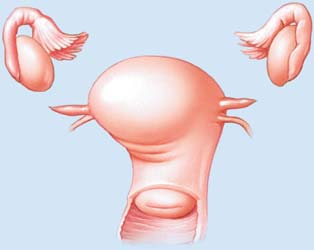
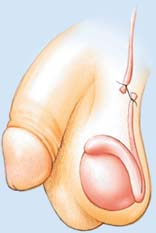
Reproducción 1101
res de progesterona en el útero pero no los activa. Puesto que las acciones normales de la progesterona están bloqueadas, el endometrio se descompone y ocurren contracciones uterinas. Estas condiciones impiden la implantación del embrión. La acción del metotrexato, un fármaco usado para el tratamiento de cáncer, es semejante al RU 496 . Estos dos fármacos interrumpen el embarazo. Luego es posible administrar prostaglandinas para inducir las contracciones uterinas que expulsan el embrión. Después del primer trimestre el aborto es practicado sobre todo debido a anomalías en el feto o enfermedad de la madre. El método más comúnmente usado es la dilatación y evacuación. Se dilata el cuello del útero, se usan fórceps para extirpar el feto y se usa succión para aspirar el resto del contenido del útero. Fármacos como las prostaglandinas también se usan para inducir el parto en abortos de segundo trimestre. Cuando los abortos son practicados por personal médico califi cado, son relativamente seguros. La tasa de mortalidad en Estados Unidos es inferior a 1 por cada 100,000. En países donde el aborto es ilegal (e inseguro), la tasa de mortalidad es tan alta como 700 por cada 100,000. Estos datos pueden contrastarse con la tasa de mortalidad por embarazo y nacimientos de alrededor de 9 por cada 100,000. La Organización Mundial de la Salud estima que un tercio de las muertes maternas resultan de abortos practicados en forma defi ciente.
Repaso
■ ¿Cómo trabajan las hormonas anticonceptivas?
■ ¿Qué es la anticoncepción de emergencia?
■ ¿Qué es el aborto espontáneo? ¿Y el aborto terapéutico?
50.7 ENFERMEDADES DE TRANSMISIÓN SEXUAL
OBJETIVO DE APRENDIZAJE
11 Identifi car enfermedades de transmisión sexual comunes y describir sus síntomas, efectos y tratamientos.
Las enfermedades de transmisión sexual (ETS) también denominadas enfermedades venéreas ( EV ) o infecciones de transmisión sexual ( ITS ) son, cerca del resfriado común, las enfermedades comunicables más frecuentes en el mundo. La Organización Mundial de la Salud ha estimado que más de 62 millones de personas son infectadas cada año por gonorrea y más de 12 millones por sífi lis . En el mundo, más de 33 millones de personas viven con VIH y más de 30 millones han fallecido por SIDA desde 1981 (esto se estudia en el capítulo 45). En Estados Unidos, más de 65 millones de personas viven actualmente con ETS y más de 12 millones (incluidos 3 millones de adolescentes) son diagnosticados con nuevas ETS cada año. Una de cada tres personas jóvenes sexualmente activas adquirirá una ETS cuando tenga alrededor de 24 años de edad. El virus del papiloma humano (VPH) es ahora la ETS más común en Estados Unidos. Se estima que 20 millones de personas en Estados Unidos están infectadas actualmente por el VPH. Por lo menos 50% de hombres y mujeres sexualmente activos se infectarán con este virus en algún momento de su vida. En la mayoría de los individuos infectados el sistema inmunológico destruye el virus antes de que provoque serios problemas a la salud. Sin embargo, el VPH puede ocasionar frotis de Papanicolaou anormales y cáncer cervical. Algunas cepas del VPH provocan verrugas genitales. Dos vacunas (Gardasil y Cervarix) previenen la infección oca-
La esterilización femenina es por ligadura de trompas
La ligadura de trompas es el método anticonceptivo más común en Estados Unidos. Un cirujano lleva a cabo este procedimiento mientras la paciente se encuentra bajo anestesia general al efectuar una pequeña incisión abdominal y usar un laparoscopio para localizar y cortar los oviductos ( FIGURA 50-20b ). Luego, los tubos son quemados (cauterizados), o pueden ser recortados o ligados. Algunas veces se extirpa una pequeña sección del tubo. Este procedimiento suele ser efectuado cuando se realiza una sección cesárea (seccionamiento C). La ligadura de trompas puede realizarse sin necesidad de practicar una incisión. El médico inserta dos pequeñas bobinas metálicas a través de la vagina, el cuello del útero, el útero y hasta llegar a los oviductos. Las bobinas provocan el desarrollo de tejido cicatricial, que bloquea los oviductos. Así como en el hombre, el equilibrio hormonal y el desempeño sexual de la mujer no se ven afectados.
En el futuro los anticonceptivos podrían controlar los péptidos regulatorios
Los anticonceptivos ideales aún no se han desarrollado. Entre las cuestiones que deben considerarse en el desarrollo de anticonceptivos se encuentran seguridad, efi cacia, costo, conveniencia y facilidad de uso. Los riesgos de cáncer, defectos de nacimiento en caso de que el método falle y la mujer quede embarazada, infertilidad permanente y efectos colaterales, como las anomalías menstruales, deben minimizarse. Algunos investigadores pronostican que los futuros métodos anticonceptivos controlarán los péptidos regulatorios y los genes que los codifi can. Por ejemplo, los genes que codifi can ciertas señales hormonales podrían interrumpirse. Otro método en estudio es el desarrollo de vacunas anticonceptivas que podrían estimular al sistema inmunológico para producir anticuerpos contra la GCh o alguna otra proteína esencial para la reproducción. Algunos investigadores están explorando métodos para interferir la motilidad del esperma o la fertilización. Es probable que los métodos anticonceptivos actuales sean reemplazados por métodos moleculares más elaborados en los próximos años.
El aborto puede ser espontáneo o inducido
El aborto es la terminación del embarazo que resulta en la muerte del embrión o feto. Los abortos espontáneos (algunas veces denominados abortos involuntarios) ocurren sin intervención. Los embriones que son abortados de manera espontánea suelen ser anormales. Los abortos inducidos son realizados en forma deliberada por razones terapéuticas o como medio de control de la natalidad. Los abortos terapéuticos se realizan cuando la vida de la madre está en peligro o cuando hay razones para sospechar que el embrión es anormal. El aborto algunas veces se usa como control de la natalidad. En todo el mundo ocurren más embarazos no planeados que planeados cada año, y más de la mitad de los primeros terminan en un aborto. Se estima que cada año se practican más de 40 millones de abortos inducidos (más de un millón en Estados Unidos). La mayoría de los abortos de primer trimestre (los que se practican durante los tres primeros meses de embarazo) se efectúan por un método de succión o por la administración de medicamentos que interrumpen el embarazo e inducen la expulsión del embrión. En el método de succión para abortar, el cuello del útero es dilatado y se inserta en el útero un aspirador por succión. El embrión y otros productos de la concepción son aspirados. Para interrumpir el embarazo también se usan medicamentos. El fármaco RU 496 (mifepristona) se une competitivamente con los recepto-
1102 Capítulo 50
grave infección conduce a infertilidad en alrededor de 20% de las mujeres infectadas. Una de cada cuatro mujeres y uno de cada cinco hombres están infectados con herpes genital , ocasionado por un virus. La mayoría de las personas infectadas presentan síntomas mínimos o ninguno. Cuando ocurre el brote, los síntomas incluyen ampollas alrededor de la zona genital. En la TABLA 50-4 se describen algunas ETS comunes. (Vea en el capítulo 45 un análisis del VIH).
Repaso
■ ¿Cuál es ahora la ETS más común en Estados Unidos?
■ ¿Qué es la EPI? ¿Qué la provoca?
sionada por varias cepas dañinas del VPH. Los profesionales de la salud anticipan que estas vacunas conducirán a la declinación de las verrugas genitales y el cáncer cervical. Para que la vacuna sea más efectiva, las personas deben vacunarse antes de volverse sexualmente activas. Las vacunas son recomendadas para niñas de 11 y 12 años de edad y está disponible para mujeres hasta de 26 años de edad. El Gardasil protege a los hombres adolescentes y adultos contra verrugas genitales y está disponible para varones de entre 9 y 26 años de edad. La clamidia , otra ETS común, no presenta síntomas en aproximadamente 50% de los hombres infectados y 75% de las mujeres infectadas. Los hombres infectados pueden tener supuración en el pene y las mujeres infectadas fl ujo vaginal. En las mujeres, la infección puede distribuirse y provocar enfermedad pélvica infl amatoria (EPI) . Esta
Algunas enfermedades de transmisión sexual comunes
Enfermedad y organismo causante Curso de la enfermedad Tratamiento
Virus del papiloma humano (VPH); alrededor de 30 cepas de VPH pueden infectar los órganos reproductivos)
Provoca frotis de Papanicolaou anormales y cáncer cervical, algunas cepas provocan verrugas genitales Modifi cadores inmunes; interferona, no se dispone de vacunas
Clamidia ( Chlamydia trachomatis , una bacteria) Supuración y ardor al orinar, o asintomático; los hombres entre 15 y 30 años de edad con varias parejas sexuales corren más riesgo; en mujeres puede ocasionar enfermedad pélvica infl amatoria (EPI), la infección de los órganos reproductivos y la cavidad pélvica puede ocasionar esterilidad ( > 15% de los casos)
Antibióticos
Gonorrea ( Neisseria gonorrhoeae , una bacteria gonococo) La toxina bacteriana puede producir enrojecimiento e hinchazón en el sitio de infección; los síntomas en hombres son dolor al orinar y descarga de pus en el pene; en aproximadamente 60% de las mujeres infectadas no hay síntomas al inicio; puede dispersarse a epidídimo (en hombres) o a los oviductos y ovarios (en mujeres), provocando esterilidad; puede ocasionar una infección extendida; daño a las válvulas cardiacas, meninges (cubiertas exteriores del cerebro y la médula espinal) y articulaciones
Antibióticos
Sífi lis ( Treponema pallidum , una bacteria espiroqueta) Las bacterias entran al cuerpo por algún defecto en la piel; chancro primario (pequeña úlcera indolora) en el sitio de la infección inicial; bastante infecciosa en esta etapa; etapa secundaria, comezón generalizada y síntomas semejantes a los de la infl uenza; pueden ocurrir lesiones escamosas altamente infecciosas; el estado latente que sigue puede durar 20 años; fi nalmente, pueden formarse lesiones denominadas gomas que dañan el hígado, cerebro, hueso o bazo; entre 5% y 10% de los casos no tratados resultan en muerte
Penicilina
Herpes genital (virus de herpes simple tipo 2) Puede no haber síntomas o ser mínimos. Cuando ocurren los síntomas, incluyen ampollas dolorosas en la zona genital que se desarrollan en úlceras; los síntomas se repiten en forma periódica; amenaza para el feto o el recién nacido
No hay cura efectiva; algunos fármacos pueden acortar brotes o reducir la gravedad; pueden tomarse medicamento para prevenir los brotes Tricomoniasis (un protozoo) Comezón, supuración, dolor; puede contraerse de inodoros y toallas de baño sucias; puede ser asintomática en los hombres Metronidazol (un antibiótico)
Infecciones por hongos (candidiasis genital; Candida albicans ) Irritación, dolor, supuración; especialmente común en mujeres; rara en hombres; puede contraerse por una vía no sexual Medicamentos antihongos
Síndrome de inmunodefi ciencia adquirida (SIDA) * (provocado por el virus de inmunodefi ciencia humana, VIH).
*(provocado por el virus de inmunodefi ciencia humana, VIH)
Síntomas semejantes a los de la infl uenza, glándulas linfáticas infl amadas, fi ebre, sudores nocturnos, pérdida de peso, disminución de la inmunidad, ocasionando neumonía y formas raras de cáncer
No hay cura efectiva; una variedad de fármacos reduce los síntomas para prolongar la vida
TABLA 50-4
■ ■ RESUMEN: ENFOQUE EN LOS OBJETIVOS DE APRENDIZAJE
50.1 (página 1078)
1 Comparar los benefi cios de la reproducción asexual y sexual, y describir cada modo de reproducción, proporcionando ejemplos específi cos.
■ En la reproducción asexual , un solo padre dota a su descendencia de un conjunto de genes idénticos a los suyos. La reproducción asexual es energéticamente efi caz y es más exitosa en entornos estables.
■ En la gemación , una parte del cuerpo del progenitor crece y se separa del resto del cuerpo. En la fragmentación , el cuerpo del progenitor puede separarse en varias piezas; cada una puede desarrollarse en un nuevo animal. En la partenogénesis , un huevo no fertilizado se desarrolla en un adulto.
■ En la reproducción sexual , la descendencia es producida por la fusión de dos tipos de gametos: óvulo y espermatozoide . Cuando el esperma-
Reproducción 1103
■ Cada eyaculación de semen contiene alrededor de 200 millones de espermatozoides suspendidos en la secreción de las vesículas seminales y la glándula próstata . Las glándulas bulbouretrales liberan una secreción mucosa.
Aprenda más sobre la espermatogénesis al hacer clic en la fi gura en CengageNOW.
4 Describir la regulación endocrina de la reproducción en el varón.
■ La testosterona establece y mantiene las características sexuales primarias masculinas, el crecimiento de órganos reproductivos y la espermatogénesis. La testosterona también estimula el desarrollo de las características sexuales secundarias en la pubertad; el crecimiento del vello facial y corporal, el desarrollo muscular y el engrosamiento de la voz.
■ La regulación endocrina de la reproducción masculina implica al hipotálamo, la glándula pituitaria y los testículos. El hipotálamo secreta hormona liberadora de gonadotropina (HLGn) , que estimula a la pituitaria anterior para secretar las hormonas gonadotrópicas: hormona estimulante del folículo (HSF) y hormona luteinizante (HL) .
■ La HSF, la HL y la testosterona estimulan directa o indirectamente la producción de esperma. La HL estimula a las células intersticiales de los testículos para que produzcan testosterona. La HSF estimula a las células de Sertoli para producir (1) proteína unida a los a andrógenos (PUA) , que se une a la testosterona y la concentra, y (2) inhibina , una hormona que inhibe la secreción de HSF.
Aprenda más sobre el control hormonal de la producción de esperma al hacer clic en la fi gura en CengageNOW.
50.3 (página 1084)
5 Relacionar la estructura de cada órgano del sistema reproductor femenino con su función.
■ Los ovarios producen gametos y las hormonas esteroides estrógeno y progesterona . La fertilización se lleva a cabo en los oviductos (conductos uterinos).
■ El útero sirve como una incubadora para el embrión en desarrollo. El revestimiento epitelial del útero, el endometrio aumenta de grosor cada mes en preparación para un posible embarazo. La parte inferior del útero, el cuello del útero , se extiende hacia la vagina.
■ La vagina recibe al pene durante la relación sexual y es la parte inferior del canal de parto. La vulva incluye los labios mayores , los labios menores , el vestíbulo de la vagina , el clítoris y el monte de Venus .
■ La función de los pechos es la lactación , la producción de leche para el bebé. Cada seno consta de 15 a 20 lóbulos de tejido glandular. La hormona prolactina estimula la producción de leche; la oxitocina estimula la expulsión de leche de los alveolos hacia los conductos, poniéndola a disposición del lactante.
Aprenda más sobre el sistema reproductivo femenino al hacer clic en la fi gura en CengageNOW.
6 Seguir el desarrollo de un óvulo humano en su paso por el sistema reproductor femenino hasta que es fertilizado.
■ La oogénesis se lleva a cabo en los ovarios. Las oogonias se diferencian en oocitos primarios . Un oocito primario y las células granulosas que lo rodean forman un folículo .
■ A medida que el folículo crece, las células de tejido conectivo que rodean las células granulosas forman una capa de células de la teca . Cuando el folículo madura, el oocito primario experimenta la primera división meiótica, dando origen a un oocito secundario y un cuerpo polar .
■ Durante la ovulación , el oocito secundario es expulsado del ovario y entra en uno de los dos oviductos, donde puede ser fertilizado. La parte de fo lículo que queda en el ovario se desarrolla en un cuerpo lúteo , una glándula endocrina temporal.
Aprenda más sobre la oogénesis al hacer clic en la fi gura en CengageNOW.
tozoide y el óvulo se unen, se produce un huevo fertilizado o cigoto . La reproducción sexual promueve la variedad genética y es especialmente adaptativa en entornos inestables y cambiantes.
■ En la fertilización externa , los compañeros de apareamiento suelen liberar huevos y esperma hacia el agua en forma simultánea. En la fertilización interna , el macho entrega esperma en el cuerpo de la hembra.
■ En el hermafroditismo , un solo individuo produce huevos y esperma.
50.2 (página 1080)
2 Relacionar la estructura de cada órgano del sistema reproductor masculino con su función.
■ El sistema reproductivo masculino humano incluye los testículos, que producen esperma y testosterona; una serie de conductos, glándulas accesorias y el pene .
■ Los testículos , alojados en el escroto , contienen los túbulos seminíferos, donde se lleva a cabo la espermatogénesis (producción de esperma). Las células intersticiales en los testículos secretan testosterona. Las células de Sertoli producen moléculas de señalización y un fl uido que nutre las células espermáticas.
■ El esperma completa su maduración y es almacenado en el epidídimo y en los conductos deferentes . Durante la eyaculación, el esperma pasa de los vasos deferentes al conducto eyaculatorio y luego hacia la uretra , que pasa a través del pene.
■ El pene consta de tres columnas de tejido eréctil , dos cuerpos cavernosos y un cuerpo esponjoso, que rodean la uretra. Cuando su tejido eréctil es inundado con sangre, el pene se erecta y funciona como el órgano copulatorio.
Aprenda más sobre el sistema reproductivo masculino al hacer clic en las fi guras en CengageNOW.
3 Seguir el paso de las células espermáticas por el sistema reproductor masculino desde su origen en los túbulos seminíferos hasta su expulsión del cuerpo en el semen. (Incluir una descripción de la espermatogénesis).
■ La espermatogénesis se lleva a cabo en los túbulos seminíferos de los testículos. Las espermatogonias se dividen por mitosis; algunas se diferencian y se convierten en espermatocitos primarios , que experimentan meiosis . La primera división meiótica produce dos espermatocitos secundarios . En la segunda división meiótica, cada espermatocito secundario produce dos espermátidas. Cada espermátida se diferencia para formar un espermatozoide maduro. La cabeza de un espermatozoide consta de un núcleo y una tapa, o acrosoma , que contiene enzimas que le ayudan a penetrar en el óvulo.
■ El esperma pasa en secuencia a través de los túbulos seminíferos de los testículos, epidídimo, conductos deferentes, conducto eyaculatorio y uretra.
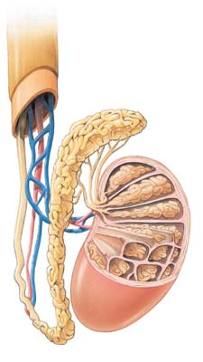
1104 Capítulo 50
Explore el control hormonal del ciclo menstrual al hacer clic en la fi gura en CengageNOW.
50.4 (página 1093)
8 Describir el proceso de fertilización humana y resumir las acciones de las hormonas que regulan el embarazo y el nacimiento.
■ La fertilización humana es la unión del oocito secundario y el espermatozoide para formar un cigoto. Los procesos de fertilización y el establecimiento del embarazo en conjunto se denominan concepción .
■ Si el oocito secundario es fertilizado, se inicia el desarrollo y el embrión se implanta en el útero. Las membranas que se desarrollan alrededor del embrión secretan gonadotropina coriónica humana ( GCh ), una hormona que mantiene el cuerpo lúteo. Durante los primeros dos o tres meses de embarazo, el cuerpo lúteo secreta las grandes cantidades de estrógeno y progesterona necesarias para mantener el embarazo. Al cabo de tres meses, la placenta , el órgano de intercambio entre la madre y el embrión, asume esta función.
Aprenda más sobre la fertilización al hacer clic en la fi gura en CengageNOW.
■ Varias hormonas, incluidas estrógeno, oxitocina y prostaglandinas, regulan el parto , el proceso de nacimiento. El trabajo de parto puede dividirse en tres etapas: el bebé nace durante la segunda etapa.
50.5 (página 1097)
9 Describir los cambios fi siológicos que se llevan a cabo durante la respuesta sexual humana.
■ La vasocongestión y el aumento en la tensión muscular son respuestas fi siológicas a la estimulación sexual. Las fases de la respuesta sexual incluyen excitación sexual , meseta , orgasmo y resolución .
50.6 (página 1098)
10 Comparar los modos de acción, efi cacia, ventajas y desventajas de los métodos anticonceptivos analizados, incluyendo la esterilización y los anticonceptivos de emergencia; distinguir entre abortos espontáneos e inducidos.
■ Los métodos efectivos de anticoncepción incluyen anticonceptivos hormonales , como los de administración oral y la progestina inyectable; dispositivos intrauterinos (DIU) , condones , diafragma anticonceptivo y esterilización ( vasectomía en el hombre y ligadura de trompas en la mujer); vea la tabla 50-3. Los anticonceptivos de emergencia pueden usarse para evitar el embarazo indeseado después de una violación o por haber tenido relaciones sexuales sin protección.
■ Los abortos espontáneos (involuntarios) ocurren sin intervención. Los abortos inducidos incluyen abortos terapéuticos , practicados cuando la salud de la madre está en peligro o cuando se considera que el embrión es anormal. Los abortos también son inducidos como medio de control de la natalidad.
50.7 (página 1101)
11 Identifi car enfermedades de transmisión sexual comunes y describir sus síntomas, efectos y tratamientos.
■ Entre los tipos comunes de enfermedades de transmisión sexual (ETS) se encuentran el virus del papiloma humano (VPH) , la clamidia (la causa más común de enfermedad pélvica infl amatoria , el herpes genital, la gonorrea, la sífi lis y el virus de inmunodefi ciencia humana , VIH (vea la tabla 50-4).
7 Describir la regulación endocrina de la reproducción en la mujer e identifi car los eventos importantes del ciclo menstrual, como la ovulación y la menstruación.
Folículo en desarrollo
Endometrio del útero
Folículo maduro Cuerpo lúteo Cuerpo lúteo degenerado
Días 1 2 4 6 8 10 12 14 16 18 20 22 24 26 28 2 1 3 Menstruación
Fase preovulatoria Fase postovulatoria Ovulación
Ovulación
■ La regulación endocrina de la reproducción femenina implica al hipotálamo, la glándula pituitaria y los ovarios. El primer día del ciclo menstrual está marcado por el inicio del sangrado menstrual. La ovulación ocurre aproximadamente el día 14 en un ciclo menstrual típico de 28 días.
■ Durante la fase preovulatoria , la hormona liberadora de gonadotropina (HLGn) del hipotálamo estimula al lóbulo anterior de la glándula pituitaria para secretar hormona estimulante del folículo (HSF) y hormona luteinizante (HL). La HSF estimula el desarrollo del folículo y estimula a las células granulosas para producir estrógeno. La HL estimula a las células de la teca para multiplicarse y producir andrógenos, que son convertidos en estrógeno.
■ El estrógeno es responsable de las características sexuales femeninas primarias y secundarias y estimula el desarrollo del endometrio.
■ Después de la primera semana, sólo un folículo continúa desarrollándose. Aunque a concentraciones relativamente bajas, el estrógeno inhibe la secreción de HSF por retroalimentación negativa. Las células granulosas producen inhibina, que también impide la secreción de HSF.
■ Durante la fase preovulatoria tardía, la concentración de estrógeno alcanza un pico. Por medio de un mecanismo de retroalimentación positiva, el estrógeno señala a la glándula anterior pituitaria que secrete HL. Esta hormona estimula la maduración fi nal del folículo y la ovulación.
■ Durante la fase postovulatoria , la HL promueve el desarrollo del cuerpo lúteo que secreta progesterona y estrógeno, hormonas que estimulan la preparación fi nal del útero para el embarazo. Durante la fase postovulatoria, la progesterona junto con el estrógeno inhiben la secreción de HLGn, HSF y HL.
■ En caso de que no ocurra fertilización, el cuerpo lúteo se degenera, la concentración de estrógeno y progesterona en la sangre baja y ocurre la menstruación.
EVALÚE SU COMPRENSIÓN
El hermafroditismo (a) es una forma de reproducción asexual (b) ocurre cuando un huevo no fertilizado se desarrolla en un animal adulto (c) es una forma de reproducción sexual en la cual el animal produce óvulos y esperma (d) suele implicar la autofertilización (e) suele requerir sólo un animal macho
En contraste con la reproducción asexual, la reproducción sexual (a) es una manera más rápida de producir descendencia (b) es más efi ciente (c) es más efi caz para aumentar el éxito reproductivo (d) es menos efi ciente para eliminar mutaciones dañinas de una población (e) limita la variedad genética entre los miembros de una población
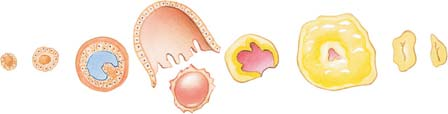
Reproducción 1105
Los túbulos seminíferos (a) son el sitio de la espermatogénesis (b) producen la mayor parte del fl uido seminal (c) se vacían directamente en el conducto deferente (d) están ubicados dentro del cuerpo cavernoso (e) reciben fl uido de las glándulas bulbouretrales
Ordene las siguientes etapas en la secuencia correcta. 1. espermatogonio 2. espermátida 3. espermatocito primario 4. espermatocito secundario 5. esperma (a) 2, 1, 3, 4, 5 (b) 5, 1, 3, 4, 2 (c) 4, 3, 1, 2, 5 (d) 1, 4, 3, 2, 5 (e) 1, 3, 4, 2, 5
¿Cuál secuencia describe mejor el paso del esperma? 1. túbulos seminíferos 2. conductos deferentes 3. epidídimo 4. conducto eyaculatorio 5. uretra (a) 3, 1, 2, 4, 5 (b) 1, 3, 2, 4, 5 (c) 5, 4, 2, 3, 1 (d) 1, 3, 4, 2, 5 (e) 3, 1, 4, 2, 5
¿Cuál de las siguientes células es haploide? (a) oocito primario (b) oogonia (c) oocito secundario (d) células del cuerpo lúteo (e) célula del folículo
El cuerpo lúteo (a) está rodeado por óvulos (b) se degenera si ocurre fertilización (c) se desarrolla en la fase preovulatoria (d) es mantenido por prostaglandinas (e) sirve como glándula endocrina temporal
Después de la ovulación, el oocito secundario entra en (a) el oviducto (b) el cuerpo lúteo (c) el cuello del útero (d) el ovario (e) la vagina
La contracción uterina es enérgicamente estimulada por la (a) progesterona (b) HSF (c) HL (d) oxitocina (e) inhibina
Las hormonas anticonceptivas (a) impiden la ovulación (b) disminuyen la concentración de estrógeno en la sangre (c) no son tan efectivos como los métodos anticonceptivos de barrera (d) disminuyen el riesgo de ETS (e) a y b
La enfermedad pélvica infl amatoria suele ser provocada por (a) la sífi lis (b) la gonorrea (c) el herpes genital (d) el VIH (e) la clamidia
Rotule el diagrama. Use la fi gura 50-9 para comprobar sus respuestas.
PENSAMIENTO CRÍTICO
¿Cómo se vería afectada una mujer si ocurriese ovulación pero el cuerpo lúteo no se desarrollara?
VÍNCULO CON LA EVOLUCIÓN. Contraste las ventajas biológicas del hermafroditismo que implican la fertilización cruzada con el hermafroditismo que implica la autofertilización.
VÍNCULO CON LA EVOLUCIÓN. La reproducción asexual es más común en hábitats con pocos parásitos. La reproducción sexual es más común en hábitats con mayor número de parásitos. Establezca una hipótesis para explicar por qué.
ANÁLISIS DE DATOS. Analice la fi gura 50-14. ¿Qué hormonas están presentes en mayor concentración justo antes de la ovulación? ¿Durante qué parte del ciclo menstrual el endometrio está más preparado para recibir un embrión? ¿Qué hormonas estimulan el engrosamiento del endometrio?
CIENCIA, TECNOLOGÍA Y SOCIEDAD. ¿Por qué cree que no se ha desarrollado una variedad de métodos anticonceptivos masculinos? Si usted fuese un investigador, ¿cuáles serían algunos métodos que podría adoptar para desarrollar un método anticonceptivo masculino?
CIENCIA, TECNOLOGÍA Y SOCIEDAD. La incidencia de abortos ha declinado más en países donde el aborto es legal (y seguro) que en países donde es ilegal (e inseguro). ¿Puede sugerir una explicación?
Preguntas adicionales están disponibles en CengageNOW en www.cengage.com/login.
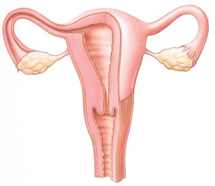